核物理基础续讲：衰变、中子核反应与截面
这一讲先用每单位时间的衰变概率描述核素寿命，再用每单位路程的碰撞概率描述中子运动。两条线都导向指数规律。通过活度、断代、核密度与截面的算例，逐步分清衰变常数、宏观截面、平均寿命和平均自由程。
来源与订正
1. 开场复习：低能中子为什么能诱发裂变
结合能是把自由核子组成一个核时释放的能量；反过来把这个核完全拆成自由核子，需要提供同样的能量。裂变却不是把所有核子逐个拆开，而是变为仍然结合着的裂片、若干中子等。因此，不能把原子核总结合能当作诱发裂变所需的入射动能。
课堂从中子与质子数之比、核力和核稳定性解释：核力作用强、力程短、有饱和性；重核的库仑斥力较大，稳定带通常偏向较高的中子/质子比。裂片通常偏丰中子，会继续衰变，其中有长寿命放射性产物。这里的“稳定带趋势”不能当作“每个核素都严格满足某个比值”的判据。
铀-235本身是长寿命放射性核素，不是严格稳定核。更完整的机制是
\[{}^{235}\mathrm U+n\longrightarrow{}^{236}\mathrm U^* .\]
复合核的激发能来自中子的质心系动能和结合进复合核所对应的中子分离能。即使入射动能很低，也不表示形成的复合核激发能很低。裂变是否发生还取决于能量条件和与其他反应道的竞争，不能由“多一个中子，所以一定裂开”推出；吸收以后也可能辐射俘获。详细反应道见N09。
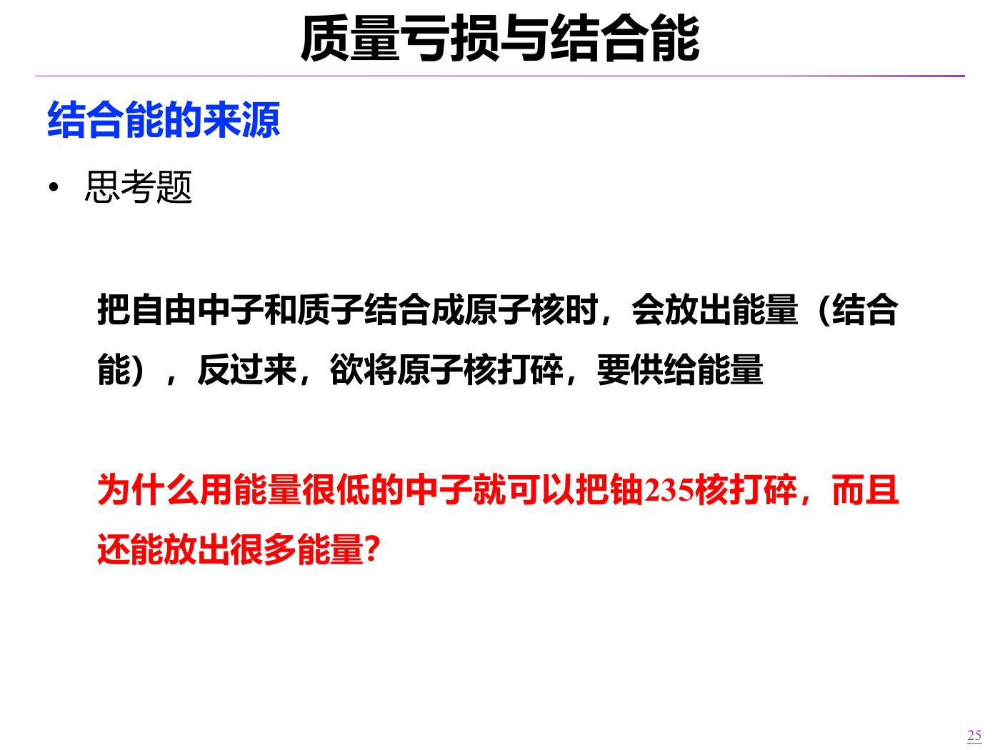
自测：为什么无需用中子提供铀核全部结合能？
因为终态裂片仍有很大的结合能；裂变不是把核完全拆为自由核子。诱发过程应分析复合核的激发能与反应道，而不是与全部结合能简单比较。
T01–T02 · 来源
2. 基态、激发态与能级图
同一个核素可以处在不同能量状态。最低能量状态叫基态，较高的状态叫激发态。基态不等于不发生放射性衰变：它只是在该核素的能级序列中最低。激发态一般寿命较短；课件用碳、铝、铀的能级图展示，重核常有更密的能级。这是图示趋势，不是任意两种核素能级间隔的严格排序定律。
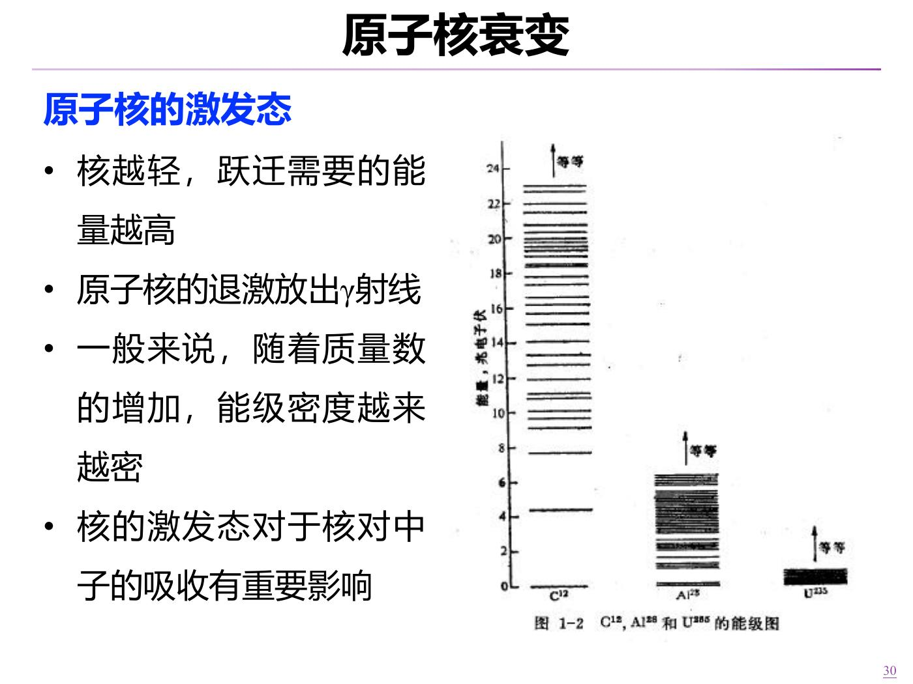
读图时沿纵轴比较激发能，水平线表示能级。右侧较密的线提示可能的能态较多，但靶核的低激发能级与吸收中子后新形成的复合核能级必须区分，不能用前者直接算后者的形成能量。
课堂问：同一核素从激发态退激到基态，为什么不放出一个质子或中子？答：若质子数、中子数都没变，就不是通过发射核子来完成的那条跃迁；课件讨论的是γ退激。γ也是光子。还要注意，核退激还有内转换等方式，“只能发γ”并非一般定理；γ与X射线也不能只按能量高低划界。本讲不展开这些支路。
自测：基态铀-235能否仍是放射性的？
可以。基态说明该核素内部能量最低；放射性稳定性还涉及能否转变为别的核素或核状态，两者不是同一问题。
T03 · 来源
3. 指数衰变、半衰期与平均寿命
设\(N(t)\)是时刻\(t\)尚未衰变的某种母核数目，\(\lambda_d\)为衰变常数，单位\(\mathrm{s^{-1}}\)。下标d用于区分衰变常数与自由程；课件写作\(\lambda\)。在衰变常数不变、没有外来补充或其他移除的模型下，
\[\frac{dN}{dt}=-\lambda_d N,\qquad N(0)=N_0.\]
分离变量并积分：\(dN/N=-\lambda_d dt\)，所以\(\ln[N(t)/N_0]=-\lambda_dt\)，得到
\[N(t)=N_0e^{-\lambda_dt}.\]
负号表示数目减少；同样长的时间，减少的是相同比例，而非相同个数。常规课程模型把\(\lambda_d\)看作核素的固有参数，不因样品数量改变。
半衰期满足\(N(T_{1/2})=N_0/2\)，因而
\[T_{1/2}=\frac{\ln2}{\lambda_d}.\]
****平均寿命需用衰变时刻的概率密度\(f(t)=\lambda_de^{-\lambda_dt}\)加权，不是直接以\(N(t)\)当成衰变数：
\[\bar t=\int_0^\infty t\lambda_de^{-\lambda_dt}\,dt
=\left[-te^{-\lambda_dt}\right]_0^\infty+\int_0^\infty e^{-\lambda_dt}\,dt
=\frac1{\lambda_d}.\]
因此\(T_{1/2}=0.693\bar t\)，平均寿命更大。例如\(\lambda_d=0.02\,\mathrm{s^{-1}}\)，平均寿命50 s，半衰期约34.7 s。
自测：经过两个半衰期还剩多少？半衰期是否表示每个核都活这么久？
还剩\(N_0/4\)。半衰期是大量同类核的统计量，单个核何时衰变是随机的。
T04–T05 · 来源
4. 放射性活度：数衰变事件，不是数射线
单一核素样品的活度为单位时间发生的衰变数：
\[A(t)=-\frac{dN}{dt}=\lambda_dN(t),\qquad A(t)=A_0e^{-\lambda_dt}.\]
若样品含多种放射性核素，在同一时刻逐项相加：\(A_{\rm total}=\sum_i\lambda_iN_i\)。不能将不同核素的核数加在一起后随意乘一个衰变常数。
\[1\ \mathrm{Bq}=1\ \mathrm{s^{-1}},\qquad1\ \mathrm{Ci}=3.7\times10^{10}\ \mathrm{Bq}.\]
课堂以铯-137的β衰变及随后子核的γ退激说明：一次母核衰变可伴随后续射线发射，不能把β数、γ数简单相加作为铯-137的活度。若讨论包含子体的总样品活度，应另行声明计数口径。图中的分支比例用于说明衰变过程，精确计算应采用相应核数据。
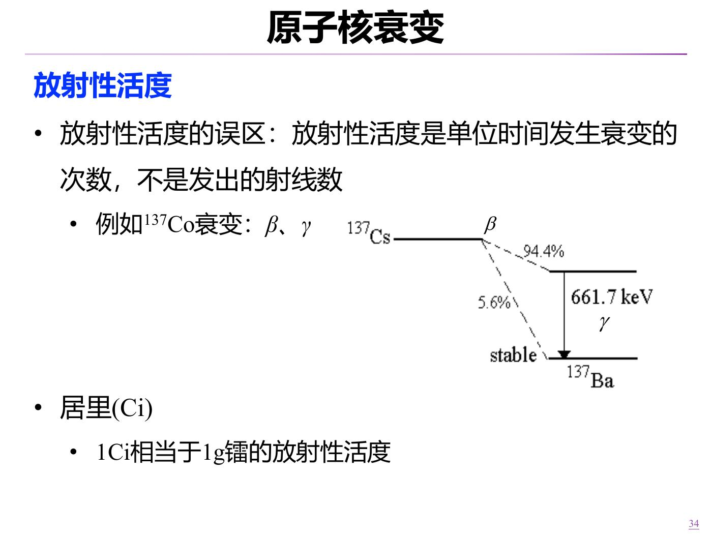
自测：有两个核素，各自活度100 Bq和200 Bq，总活度是多少？
在同一时刻、相同计数口径下为300 Bq。探测器的计数率不一定等于300次/s，还涉及发射分支、探测效率等；本讲公式算的是衰变率。
T06–T07 · 来源
5. 人体钾-40活度算例与丰度的口径
题设：体重75 kg，钾质量占0.2%，天然钾中钾-40原子丰度为0.0117%，半衰期\(1.277\times10^9\)年。计算采用题设的理想模型。
先找衰变常数：
\[\lambda_K=\frac{0.693}{1.277\times10^9\times365\times86400}
\approx1.721\times10^{-17}\ \mathrm{s^{-1}}.\]
钾的总质量为\(75000\times0.002=150\) g。按课件采用40 g/mol作近似，并把丰度近似用于质量分配，
\[N_{40}\approx\frac{150\times0.000117}{40}\times6.02\times10^{23}
\approx2.641\times10^{20},\]
\[A_K=\lambda_KN_{40}\approx4.55\times10^3\ \mathrm{Bq}.\]
课堂已提出的近似问题：丰度是原子数比例，不能无条件当成质量比例。严格按原子丰度\(x_{40}\)计算，应先用天然钾平均摩尔质量\(\bar M_K\)求总钾原子数：
\[N_{40}=\frac{m_K}{\bar M_K}N_Ax_{40}.\]
课件用40代替平均摩尔质量是数量级估算。因此约4500 Bq是这一近似下的估算结果。
课堂另给：人体含18%碳，碳-14丰度\(1.2\times10^{-12}\)，半衰期5730年，要求课后加入碳-14计算总活度；课件给出的参考总量约7900 Bq。可按上面的方法继续计算。关键思考是：核数虽少，衰变常数却大得多，也能贡献显著活度。
自测：为什么求Bq时不能把半衰期直接代入“年”？
Bq要求每秒衰变次数，\(\lambda\)必须换成\(\mathrm{s^{-1}}\)。若保留年，算出的是每年的衰变数，单位并非Bq。
T08–T10 · 来源
6. 碳-14断代：从活度比求时间
课堂模型假设活体植物与环境持续交换碳，初始\(^{14}\mathrm C/{}^{12}\mathrm C=1.2\times10^{-12}\)；死亡后停止交换，仅发生衰变。题设古木每克碳活度为3.5次/min，碳-14半衰期5730年。
每克活体碳的总原子数近似为\(N_A/12\)，因此
\[N_{14,0}\approx\frac{6.022\times10^{23}}{12}\times1.2\times10^{-12}
=6.022\times10^{10},\]
\[\lambda_C=\frac{0.693}{5730\times365\times24\times60}
\approx2.301\times10^{-10}\ \mathrm{min^{-1}}.\]
于是\(A_0\approx13.8\)次/min，利用\(A/A_0=e^{-\lambda_Ct}\)：
\[t=\frac{T_{1/2}}{\ln2}\ln\frac{A_0}{A}\approx1.13\times10^4\ \text{年}.\]
课件写11343年；使用13.8这一已舍入中间值会略有差别，不应强求末位一致。测得的是碳的交换停止时间，在本题理想条件下据此估计年代；实际样品污染和初始比例变化不在本算例中处理。
课堂讨论恐龙化石：经过极多半衰期，原始碳-14已少到不适合该方法，还必须判断样品是否保存待测的原始碳。不能只因为“物体古老”就套公式。
自测：若活度是初始的四分之一，推得年代是多少个半衰期？
两个半衰期，因为\(1/4=(1/2)^2\)。
T11–T12 · 来源
7. 射线、丰度与铀钍的长期衰变
课件42页比较射线的物理组成：α为氦原子核，β为电子或正电子，γ为光子，中子射线为运动的中子，质子为氢原子核。带电粒子能直接电离；光子和中子主要通过产生次级带电粒子间接电离。贯穿能力依粒子能量和介质而变，课件给出的是定性比较，不能由“电离本领弱”推断生物效应小，也不能由皮肤能阻挡某些α粒子推出一般照射无害。
原子数比例与质量比例
按本课程约定，铀-235丰度\(\omega\)是铀中原子数比例，富集度\(\varepsilon\)采用质量比例。忽略微量铀-234并用235、238近似摩尔质量：
\[\varepsilon=\frac{235\omega}{235\omega+238(1-\omega)},\qquad
\omega=\left[1+\frac{235}{238}\left(\frac1\varepsilon-1\right)\right]^{-1}.\]
因为235比238轻，相同的原子数份额对应稍小的质量份额。课件0.72%与0.712%是近似列值；不要当作精确互算后的全部有效数字。平均摩尔质量可写为
\[\bar M=235\omega+238(1-\omega)
=\left(\frac{\varepsilon}{235}+\frac{1-\varepsilon}{238}\right)^{-1}\ \mathrm{g/mol}.\]
这里质量份额对应调和式，原子份额对应算术式，不可互换。
长寿命不等于稳定
课件给铀-235、铀-238、钍-232半衰期约\(7.1\times10^8\)、\(4.5\times10^9\)、\(1.4\times10^{10}\)年，解释它们为何今天仍存在。在仅考虑自然衰变的封闭模型中，
\[\frac{N_{235}(t)}{N_{238}(t)}=
\frac{N_{235}(0)}{N_{238}(0)}e^{-(\lambda_{235}-\lambda_{238})t}.\]
因为\(\lambda_{235}>\lambda_{238}\)，铀-235比例随漫长时间减小。几十年的工程尺度上，两者自身衰变引起的变化很小；这不意味着可忽略运行中的燃耗和中子反应。
自测：已知质量份额时，能直接对235与238做算术平均吗？
不能。应先由质量除以各自摩尔质量得到物质的量，再求总质量/总物质的量，即上述调和形式。
T13–T15 · 来源
8. 链式反应与中子收支
一次裂变会释放若干中子，但这些中子并非全部引起下一次裂变：有的泄漏，有的被非燃料材料吸收，有的在燃料中发生非裂变吸收，也会散射改变方向和能量。因此，“一次产生2–3个中子”不足以证明链式反应能够自持。
课堂给出的临界描述是每一代中子数保持不变，或稳态时中子产生率与消失率平衡：
\[\text{裂变等产生率}=\text{吸收率}+\text{泄漏率}.\]
这里强调的是反应堆内中子数的收支。散射通常不消灭中子，但会改变它的能量、位置与方向，进而影响后续吸收和泄漏。在窄束实验里散射却会移除“未碰撞束”，两个计数对象不能混淆。课件用不可控增长作形象类比，不由此把反应堆的功率增长等同于核爆炸。
自测：被散射出原方向的中子是否一定从反应堆中消失？
不是。它离开原束流方向，但可能仍在堆内继续运动。堆内总中子收支与未碰撞束流收支不同。
T16–T18 · 来源
9. 势散射与复合核：按机制和按结果分别分类
按本讲主要机制分为势散射、复合核形成与衰变；教材35页还列直接相互作用，所以“两种机制”是课程当前简化，不是全部核反应机制的穷尽分类。
势散射中，中子受核表面势作用而散射，不形成复合核，靶核内能不变。中子与靶核系统的总动能、总动量守恒，属于弹性散射；中子自己的动能却可以传给靶核。这正是弹性散射能够慢化中子的原因。任何能量的中子均可能发生，不等于各能量发生概率相同。
复合核由\(n+{}^A_ZX\to({}^{A+1}_ZX)^*\)形成，随后存在多种出口。形成时“吸收进复合核”是中间过程，不意味着最终反应必定归为吸收。
| 最终反应道 |
最终余核与出射粒子 |
判别要点 |
| 复合弹性散射\((n,n)\) |
原核素回到原内能态，出射中子 |
内能不变，系统动能守恒 |
| 非弹性散射\((n,n')\) |
原核素处在激发态，出射中子 |
部分动能变成内能，有激发阈能 |
| 辐射俘获\((n,\gamma)\) |
质量数增1的核与γ |
与裂变不同的吸收道 |
| 裂变\((n,f)\) |
裂片、若干中子等 |
入射中子被吸收，同时另有中子产生 |
| \((n,2n)\) |
质量数为\(A-1\)的余核、2个中子 |
中子倍增，收支必须单独记账 |
| \((n,p)\) |
质量数\(A\)、电荷数\(Z-1\)的余核、质子 |
核子数、电荷守恒 |
| \((n,\alpha)\) |
质量数\(A-3\)、电荷数\(Z-2\)的余核、α |
同样由守恒关系判别 |
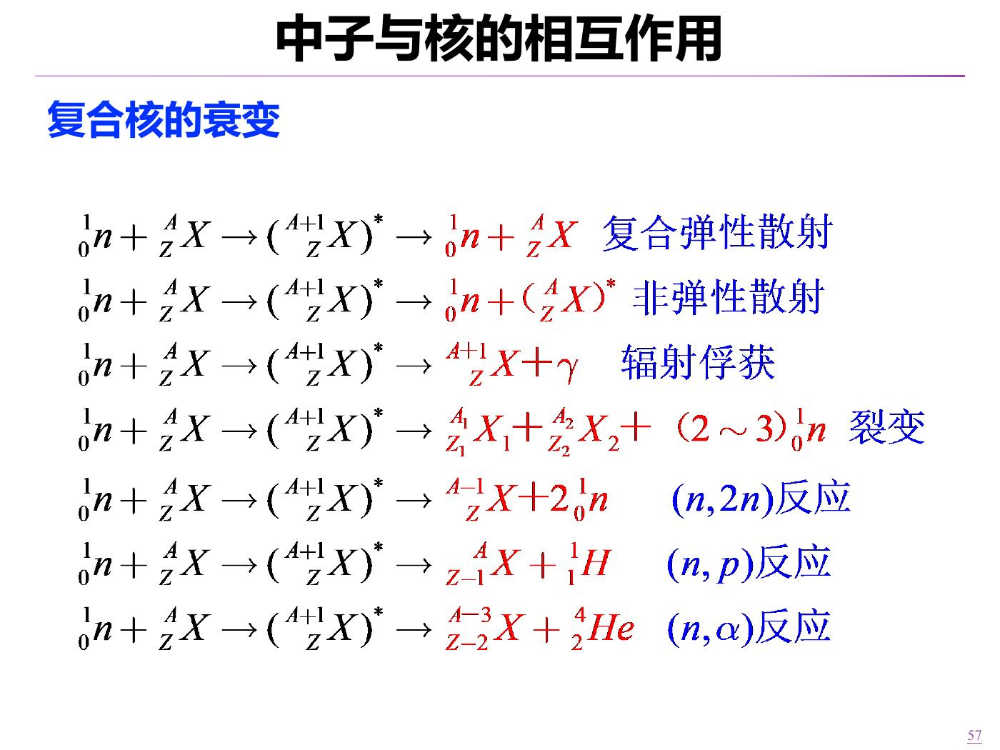
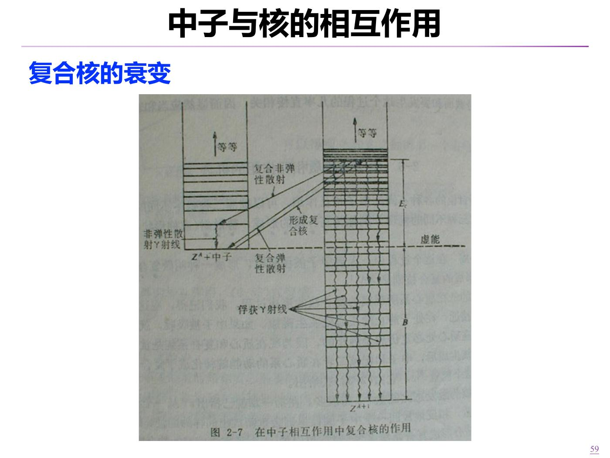
第二张图把靶核与复合核的能级并列。进入复合核的能量包含结合贡献，出口可以回到原核素，也可以形成新核或裂片。读图时先看质量数，再看星号与出口粒子，不能把所有箭头都称为同一种“退激”。
自测：弹性散射是否意味着中子能量不变？
不意味着。守恒的是中子与靶核系统的总动能；两者之间可以重新分配动能。势散射与复合弹性散射又是两种不同机制。
T19–T21 · 来源
10. 能级宽度与寿命
复合核激发态的寿命常用能级宽度\(\Gamma\)描述：
\[\Gamma=\hbar\lambda_d,\qquad\bar t=\frac{\hbar}{\Gamma}.\]
\(\hbar\)的量纲为能量乘时间，因而\(\Gamma\)的量纲是能量；宽度越大，衰变率越大，平均寿命越短。这里的宽度是与有限寿命相关的能量展宽，不是两个能级之间的能量差。
不同出口对应分宽度，课件给出
\[\Gamma=\Gamma_\gamma+\Gamma_n+\Gamma_f+\Gamma_p+\Gamma_\alpha+\cdots.\]
在各出口以常数衰变率竞争的模型中，\(\lambda_d=\sum_i\lambda_i\)，乘以\(\hbar\)就得到总宽度为分宽度之和；相应分支比\(b_i=\Gamma_i/\Gamma\)。不能仅凭“跃迁能量更大”断定某支路的概率一定更大。
自测：总宽度加倍，平均寿命如何变化？
按\(\bar t=\hbar/\Gamma\)，平均寿命减半。这里不涉及把能级差加倍。
T22 · 来源
11. 核密度、束流强度与薄靶实验
后半堂的\(N\)改指单位体积内的靶核数，单位\(\mathrm{cm^{-3}}\)，不是前半堂整个样品的核数。平行束流强度\(I\)是每秒垂直穿过单位面积的中子数，单位\(\mathrm{cm^{-2}s^{-1}}\)。单位中的n仅提示“中子”，不是再乘一个中子密度。
用均匀、单向、同一能量的中子束垂直照射厚度\(\Delta x\)的薄靶，只统计透过的未碰撞束\(I'\)，把正的减少量定义为\(\Delta I=I-I'\)。在材料和中子能量给定时，入射越多、靶核密度越大、厚度越大，发生相互作用的机会越多：
\[\Delta I\approx\sigma IN\Delta x,\qquad N\sigma\Delta x\ll1.\]
“薄”是指沿厚度束流衰减很小，靶内各位置受到的入射强度近似相同，不是必须在几何上只有一层原子。
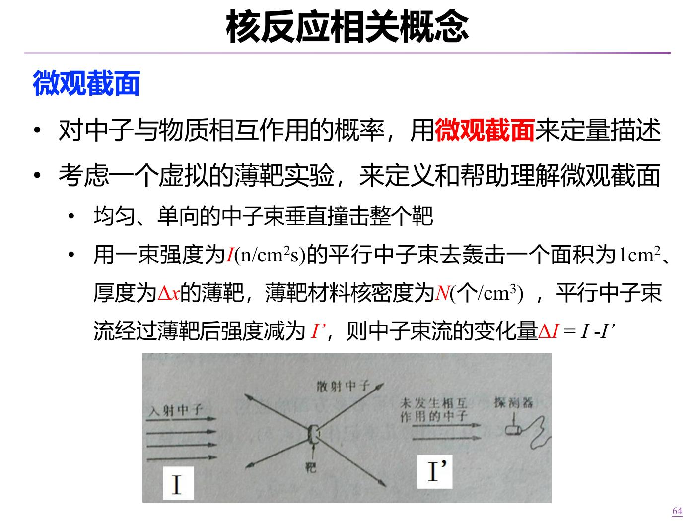
图中后方探测器统计未碰撞束；散射和吸收都会使中子退出这个统计对象。在保持总截面不变时，只改变散射/吸收的分配比例不改变未碰撞束的移除总量。课堂用连续角分布说明“恰好沿原方向”这一单点的概率为零；实际探测器有有限接收角，可能收进散射中子，因此实验条件仍需说明。
自测：为什么厚靶不能直接用全厚度乘\(N\sigma I_0\)？
因为越往后未碰撞入射束越弱，不能给各层都使用同一个\(I_0\)。应分成微元，对局部束流写微分方程。
T24–T27 · 来源
12. 微观截面：有面积量纲的相互作用度量
从薄靶关系得到
\[\sigma\approx\frac{\Delta I/I}{N\Delta x}.\]
分子是碰撞份额，分母\(N\Delta x\)是靶核面密度，单位\(\mathrm{cm^{-2}}\)，不是无单位的核总数。所以\(\sigma\)的量纲是面积。课堂取1 cm²截面积时面密度与该面积内核数的数值关联，但量纲仍不可丢。
\[1\ \mathrm b=10^{-24}\ \mathrm{cm^2}=10^{-28}\ \mathrm{m^2}.\]
微观截面是中子与单个核相互作用概率的一种度量，不是概率本身，也不是简单几何投影面积。给出核素、反应道和中子能量，截面才有明确含义。
常用下标：总截面t、散射s、吸收a、辐射俘获γ或c、裂变f。在当前散射/吸收的简化分类中\(\sigma_t=\sigma_s+\sigma_a\)，吸收包括俘获、裂变及适用的其他吸收道。分类边界：PPT68把\((n,2n)\)也列入“吸收”式，属于需澄清的反应道记账口径；它不能直接当作中子净损失，后续输运中必须计入其倍增源，不能机械套用两项损失分解。
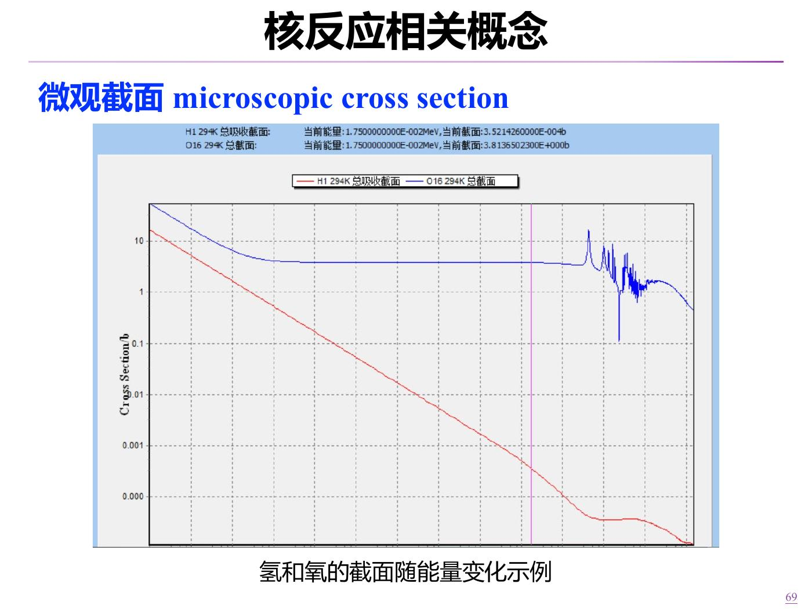
图中红线为氢的吸收截面、蓝线为氧-16总截面，比较的是不同反应道。低能区红线随能量升高而下降，蓝线高能区出现结构，说明截面具有能量依赖。读图时先辨明能量范围与反应道，再比较截面的变化。
自测：截面100 b能否解释为反应概率100？
不能。截面有面积单位；还要结合靶核面密度等条件，才能求无量纲概率。
T28–T30 · 来源
13. 宏观截面与有限距离概率
宏观截面将单核性质和材料核密度结合：
\[\Sigma=N\sigma,\qquad[\Sigma]=\mathrm{cm^{-1}}.\]
它是中子在介质中每单位路程发生相互作用的概率强度。在已存活到当前位置的条件下，走过微小距离\(dx\)发生碰撞的条件概率约为\(\Sigma dx\)。这不等于走过任意有限长度都可以线性相加。
课堂用\(\Sigma_a=0.25\,\mathrm{cm^{-1}}\)提问：“1 cm吸收25%，4 cm是否全部吸收？”答案是否定的。课件73、81页的25%只相当于线性近似。均匀、恒定截面、只考虑吸收的模型给出
\[P_a(0,L)=1-e^{-\Sigma_aL}.\]
所以1 cm内约22.1%，4 cm内约63.2%，都不是简单的\(0.25L\)。完整推导见N15。若有散射竞争，而问题问“第一次碰撞就是吸收并发生在L以内”，可进一步求得
\[P_{\text{首次吸收}}(0,L)=\int_0^L\Sigma_ae^{-\Sigma_tx}\,dx
=\frac{\Sigma_a}{\Sigma_t}(1-e^{-\Sigma_tL}).\]
这与“经历若干次散射后最终被吸收”不是同一个问题。
自测：\(\Sigma_a=0.25\)对应4 cm这个数，应如何理解？
在上述恒定截面吸收模型中，4 cm是吸收自由程的平均值，不是每个中子的固定路程或最大路程。
T31–T32 · 来源
14. 核密度与宏观截面的计算
纯核素材料，质量密度\(\rho\)用g/cm³、摩尔质量\(M\)用g/mol时，
\[N=\frac{\rho N_A}{M},\qquad\Sigma_r=N\sigma_r.\]
化合物摩尔质量为\(M_c\)，每个化学式单位含\(\nu_i\)个第i种原子，则\(N_i=\nu_i\rho N_A/M_c\)。若该元素还含不同同位素，应再乘各同位素原子丰度。已知混合物的核素质量份额\(w_i\)，则\(N_i=\rho w_iN_A/M_i\)。最后对相同能量、相同反应道相加：
\[\Sigma_r=\sum_iN_i\sigma_{r,i}.\]
课堂例1：水中的氢核密度
\(\rho=1\,\mathrm{g/cm^3}\)，\(M_{\mathrm{H_2O}}\approx18\,\mathrm{g/mol}\)：
\[N_{\mathrm{H_2O}}=\frac{1}{18}\times6.022\times10^{23}=3.346\times10^{22}\ \mathrm{cm^{-3}},\]
\[N_H=2N_{\mathrm{H_2O}}=6.691\times10^{22}\ \mathrm{cm^{-3}},\quad N_O=N_{\mathrm{H_2O}}.\]
“氢要乘2”是本例关键。核密度的单位与题设保持一致，采用每立方厘米。
课堂例2：纯铀-235金属的宏观总截面
题设密度19 g/cm³，摩尔质量近似235 g/mol。该例的微观截面有700 b与780 b两种记载，分别计算可看出它们对结果的影响：
\[N=\frac{19}{235}\times6.022\times10^{23}=4.869\times10^{22}\ \mathrm{cm^{-3}}.\]
若取700 b，则
\[\Sigma_t=4.869\times10^{22}\times700\times10^{-24}=34.08\ \mathrm{cm^{-1}}.\]
若取780 b，则为37.98 cm⁻¹。课堂给出的34.1与700 b分支自洽。这里的700 b只是算例输入，未给定中子能量，不把它当作铀-235在所有能量下的固定总截面。
进一步练习：化合物与混合物
课件第75–79页的铝、钠、NaCl、铀同位素混合物和UO₂算例，分别练习纯材料核密度、化学计量数、质量份额与同位素分配。特别是UO₂，应先辨别给出的富集度是否为“铀中235的质量份额”，不能将它当成整个氧化物中的份额。
自测：为什么要先把barn换成cm²？
若\(N\)用cm⁻³，必须与cm²相乘才得到cm⁻¹。漏乘\(10^{-24}\)会造成24个数量级的错误；采用以\(10^{24}\,\mathrm{cm^{-3}}\)为单位的核密度时，也要明确数值约定。
T33–T35 · 来源
15. 指数衰减与平均自由程的完整推导
对象是均匀介质中给定能量的未碰撞中子束，宏观总截面\(\Sigma_t\)沿路程不变。把厚靶拆成薄层，在x处写
\[dI(x)=-\Sigma_tI(x)dx,\qquad I(0)=I_0.\]
这里\(dI\)是带符号的变化量，小于零；前面定义的\(\Delta I=I-I'\)是正的减少量。课件82页改用了\(I'-I\)，所以必须同时改变符号，不能只抄一个负号。
积分得
\[I(x)=I_0e^{-\Sigma_tx},\qquad S(x)=\frac{I(x)}{I_0}=e^{-\Sigma_tx}.\]
\(S(x)\)是飞过x仍未碰撞的概率。它非负、从1单调下降。
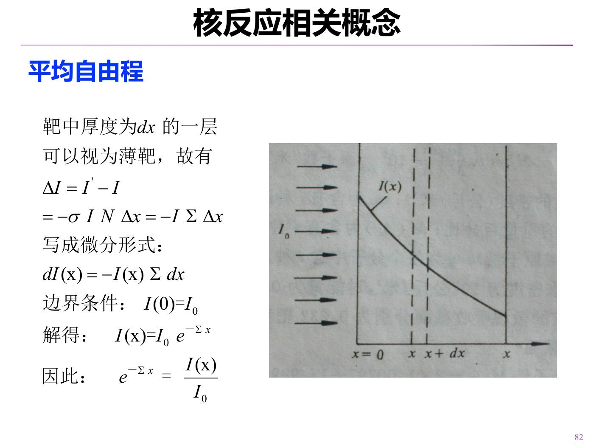
第一次碰撞发生在\([x,x+dx]\)内，必须先存活到x，再在后一小段碰撞：
\[p(x)dx=S(x)\Sigma_tdx=\Sigma_te^{-\Sigma_tx}dx.\]
\(p(x)\)是概率密度，单位长度倒数；\(p(x)dx\)才是小区间概率。连续分布在一个精确点的概率为零。归一化为\(\int_0^\infty p(x)dx=1\)。
平均自由程用\(\ell\)记（课堂用\(\lambda\)，勿与衰变常数混淆）：
\[\ell=\int_0^\infty xp(x)\,dx
=\int_0^\infty x\Sigma_te^{-\Sigma_tx}\,dx
=\left[-xe^{-\Sigma_tx}\right]_0^\infty+\int_0^\infty e^{-\Sigma_tx}\,dx
=\frac1{\Sigma_t}.\]
这就是由概率分布推得的平均值，而不是用“概率累加到1”猜出来的固定碰撞位置。类似可定义\(\ell_a=1/\Sigma_a\)、\(\ell_s=1/\Sigma_s\)；在二类模型中
\[\frac1\ell=\frac1{\ell_a}+\frac1{\ell_s}.\]
不能把平均自由程直接相加。若介质不均匀或沿轨迹能量改变，需改用局部截面并重新分析，当前常系数指数式的条件就不再直接满足。
与前半堂对照：时间上的存活\(e^{-\lambda_dt}\)对应路程上的未碰撞存活\(e^{-\Sigma_tx}\)；平均寿命\(1/\lambda_d\)对应平均自由程\(1/\Sigma_t\)。一个单位是时间，一个单位是长度。
自测：走过一个平均自由程后，多少中子尚未碰撞？
\(S(\ell)=e^{-1}\approx36.8\%\)。已至少碰撞一次的比例约63.2%，不是100%。
T36–T38 · 来源
16. 课后任务与复习
课堂明确要求：完成含碳-14的人体活度估算；复习化合物、混合物的核密度与宏观截面计算；阅读课件中的英文材料与网络学堂希腊字母表。教师鼓励围绕不懂的知识点与AI讨论，再和课本对照，把问题、回答和自己的判断放进讨论区；参与讨论可能计入成绩。另有自愿参与课程知识图谱梳理的大作业机会，实际报名和评分规则以课堂正式通知为准。
本讲没有确认教材具体习题号。可从教材索引定位G1 PDF45第5题（两种铀同位素丰度随时间变化），可用来练习两种核素衰变速度不同如何影响比例。公式条件可定位G1 PDF48式(2-3)、PDF52式(2-10)–(2-12)。
学完平均自由程后，可用课件第86页的英文例题检查理解。下一阶段将学习中子通量密度、反应率与平均截面。
课堂回顾
本页按课堂顺序回顾讲解，可查看对应课件、跳转到相关讲义，并定位播放录音。
来源与订正
T01 · 结合能复习与低能中子问题
时间：00:32–03:36；课件PDF：25。
展开对应课件页
PDF 第 25 页上节课讲了结合能，即质子、中子结合成原子核时释放的能量，也讲了比结合能以及聚变、裂变为什么能放能。这里有一个问题：大核的结合能很大，甚至每个核子的比结合能都有七八兆电子伏，为什么用能量很低的中子去打铀-235，就能诱发裂变？入射中子甚至可以低到课件所讨论的很低能区，并没有把那么大的动能带给原子核。
这涉及结合能与中子入射能量两个概念，不能混为一谈。课堂先用一个直观解释：铀-235多吸收一个中子以后，核的组成发生了变化，可能通过裂开并放出中子走向另一种状态。为什么低能中子能被结合进去，本节稍后还要讲。
回到讲义
T02 · 核力、稳定带与裂片
时间：03:36–05:10；课件PDF：26, 27, 28。
展开对应课件页
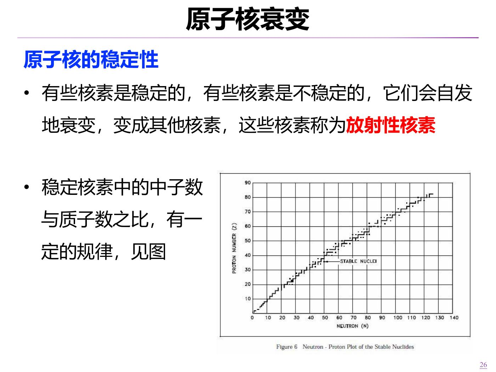
PDF 第 26 页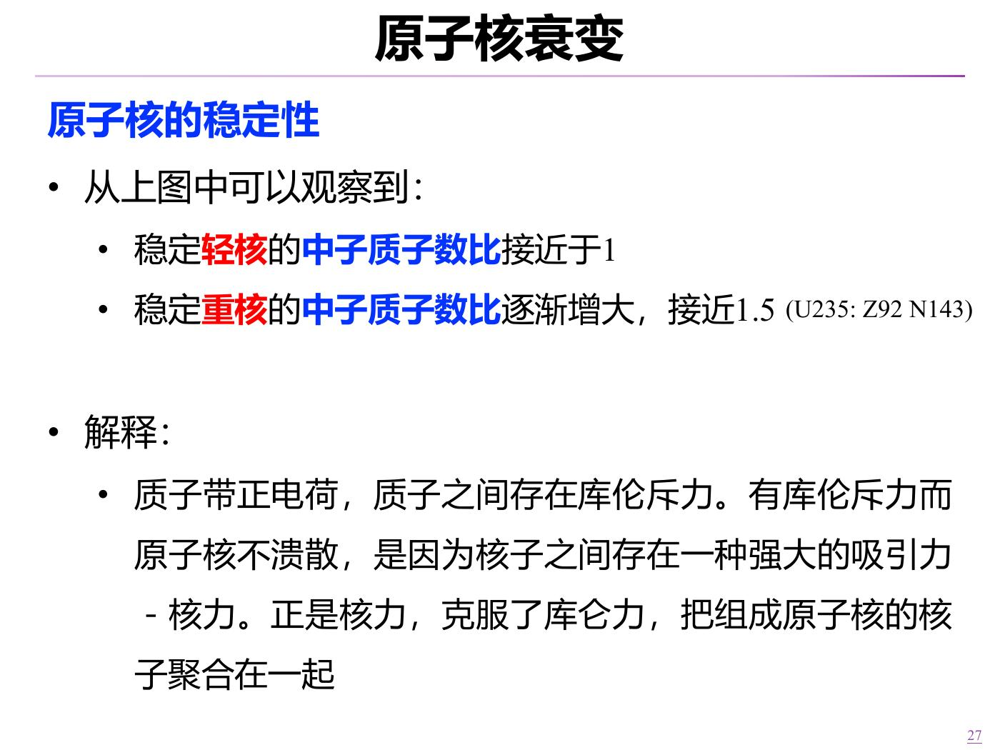
PDF 第 27 页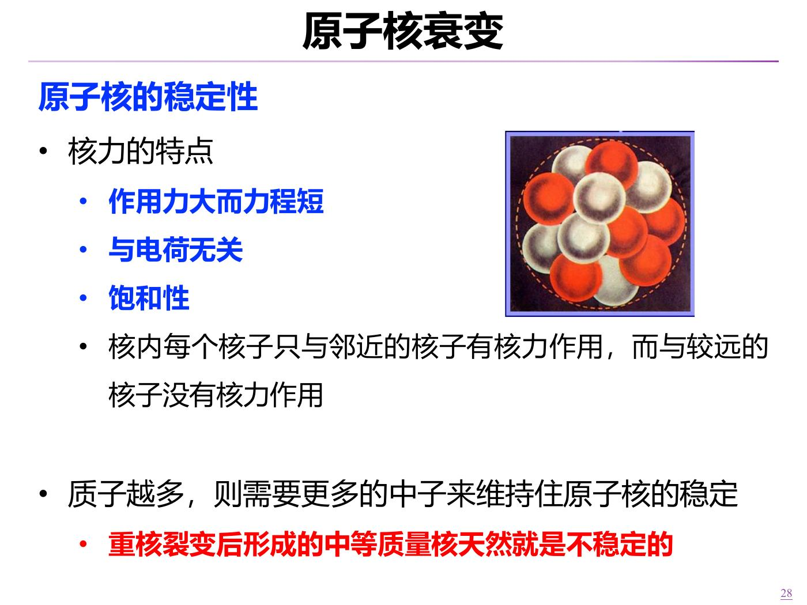
PDF 第 28 页原子核的稳定性与核内不同作用有关。质子之间有库仑斥力，核子之间又有很强的核力。核力作用很强但力程短，与是否带电没有简单对应关系，质子、中子都参与核力作用；它还有饱和性，每个核子主要与近邻作用。
随着质子数增加，需要更多中子参与维持核的结合。重核裂开后，形成的中等质量裂片通常还保留较高的中子/质子比，与这一质量区稳定核的情况不同，因此会继续经历变化。有些产物的半衰期很长，成为需要关注的放射性核素。仅从中子与质子数之比就能看出这些规律，但它只是认识稳定性的一条线索。
回到讲义
T03 · 激发态、退激问答与能级图
时间：05:10–09:22；课件PDF：29, 30。
展开对应课件页
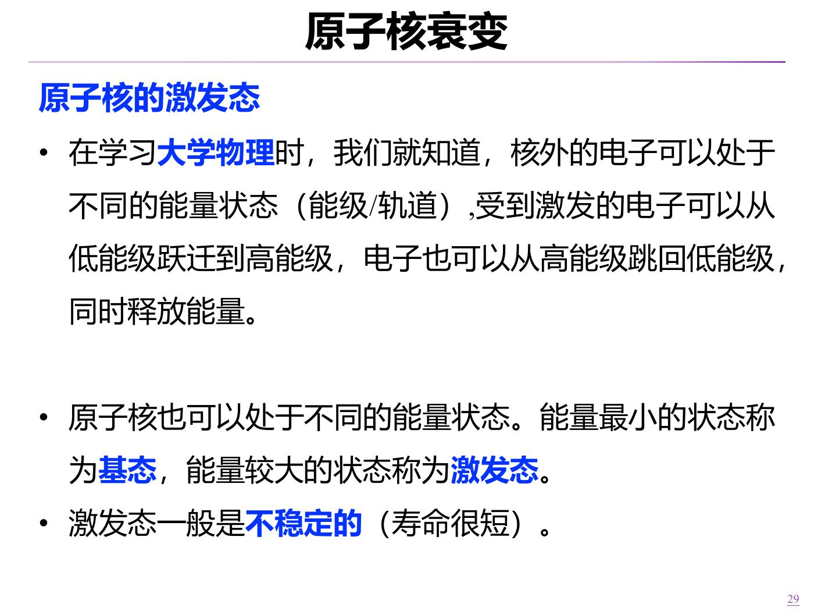
PDF 第 29 页PDF 第 30 页核外电子有不同能态，原子核本身也有。能量最低的叫基态，能量较高的叫激发态；激发态一般不稳定、寿命较短，会释放能量发生变化。把各核的基态和激发态画出来，可以看到课件里较轻的碳核能级间隔较大，铝的能级较密，铀的能级更密。
课堂问：为什么同一种原子核从激发态回到基态，图中放出的是γ射线，而不是中子、质子或α粒子？有同学先从能量不够回答，随后有同学指出“种类没有变”。老师强调后一个判据：若仍是碳-12，质子数、中子数都没变，就不是通过放出一个核子来完成这条跃迁。这里以光子的形式释放能量。
再看能级图，随着质量数增加，能级通常更密。课堂借此说明核的能态对于中子相互作用的重要性，并由不稳定核随时间变化引出衰变。
回到讲义
T04 · 衰变规律与微分方程
时间：09:22–12:04；课件PDF：31。
展开对应课件页
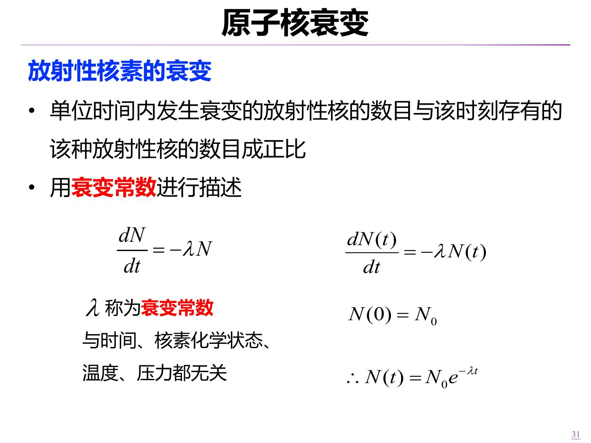
PDF 第 31 页对一种放射性核，单位时间发生衰变的数目与该时刻还存在的核数成正比。比如用课堂的比例示意，100个核对应一定的衰变数，剩80个时，同样单位时间内的衰变数也相应减小。这是统计规律。
用衰变常数λ表示比例系数，因为剩余核数在减少，写成\(dN/dt=-\lambda N\)。λ描述这种核本身的衰变特性；课堂在常规条件模型下把它看作与时间、化学状态、温度、压力无关。
这里统计的是所关注母核或核状态的消失；本式不是包含外部生成、照射反应等全部核数变化的通式。
回到讲义
T05 · 指数解、平均寿命和半衰期
时间：12:04–16:02；课件PDF：31, 32。
展开对应课件页
PDF 第 31 页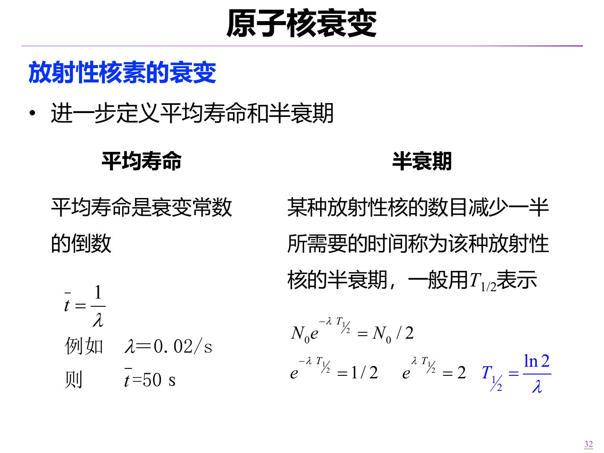
PDF 第 32 页老师提醒同学阅读网络学堂上传的希腊字母表，熟悉符号读写，不能只依赖课堂PPT。设零时刻有\(N_0\)个放射性核，解前面的微分方程，得到\(N(t)=N_0e^{-\lambda t}\)。所谓指数衰减，其背后的结构就是某时刻的减少率与当时剩余量成正比。
每个核的寿命不同，有的很快衰变，有的晚得多。把这些寿命作统计平均，得到平均寿命\(\bar t=1/\lambda\)。例如λ为0.02每秒，平均寿命就是50秒。半衰期则是核数由原来的数量降为一半所需的时间。代入\(N(T_{1/2})=N_0/2\)，可得\(T_{1/2}=\ln2/\lambda\)。
课堂问两者哪个大，同学答平均寿命。因为\(\ln2\approx0.693\)，半衰期是平均寿命的0.693倍。
回到讲义
T06 · 活度定义、混合样品与单位
时间：16:02–18:37；课件PDF：33。
展开对应课件页
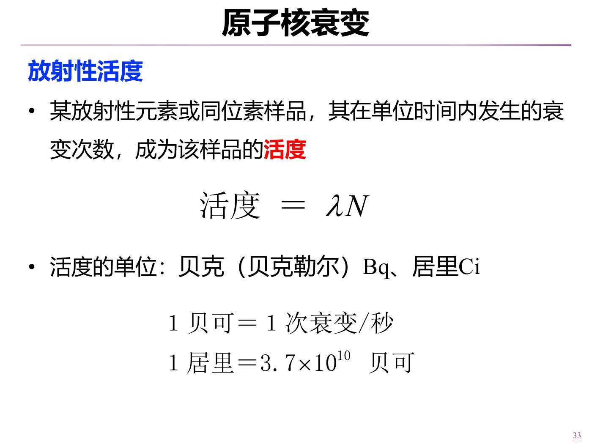
PDF 第 33 页样品在单位时间发生衰变的次数叫活度。老师用一杯咖啡打比方：杯中有多少放射性核，这些核以多快的速率衰变，两者相乘就是活度，\(A=\lambda N\)。若样品里有多种放射性核素，应把每种的\(\lambda_iN_i\)相加，不能只用一种核素的参数。
常用单位有贝克勒尔Bq和居里Ci。1 Bq表示每秒一次衰变，1 Ci等于\(3.7\times10^{10}\) Bq。老师让同学了解居里这一单位的由来。
回到讲义
T07 · 射线数误区、铯-137与实验源
时间：18:37–21:47；课件PDF：34, 35, 41。
展开对应课件页
PDF 第 34 页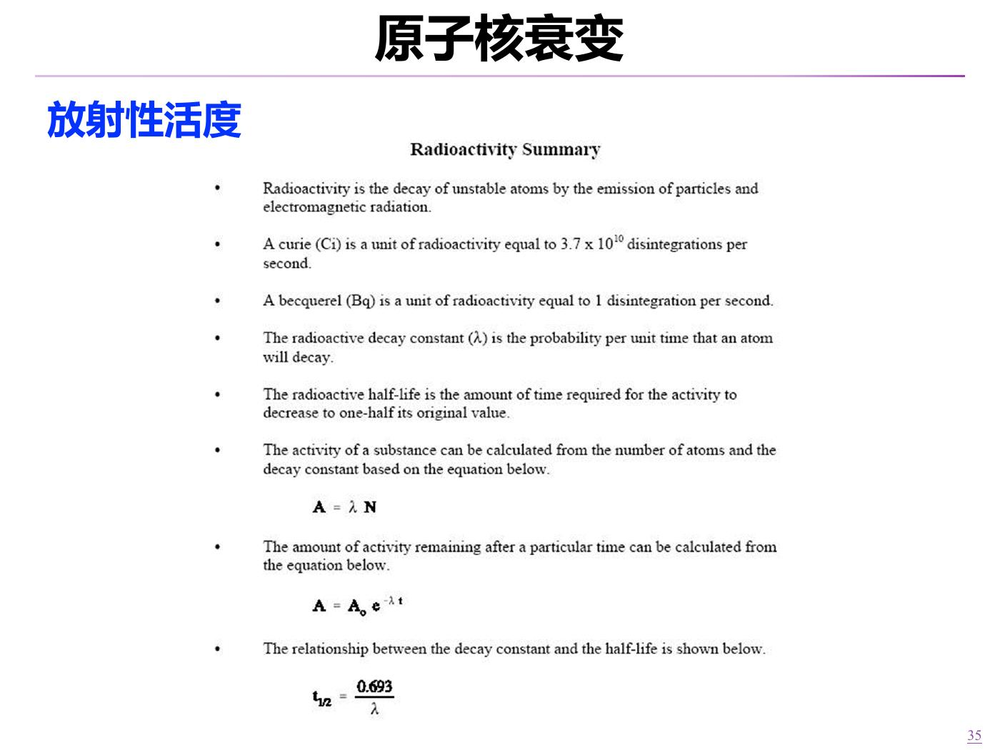
PDF 第 35 页PDF 第 41 页活度数的是单位时间的衰变次数，不是发出的射线总数。课堂在这里将核素名称明确为铯-137。以铯-137的衰变示意为例，有的分支先发生β衰变，再伴随子核的γ退激，有的分支直接到较低状态。若一次母核减少对应后续两种射线，不能因为看见两种射线就把母核衰变数记成两次。
课堂把居里联系到约1克镭的历史活度尺度，说明它是一个很大的单位；实验中也会用Bq表示源的活度。老师提及原有中子扩散长度教学实验的源已封存，正希望利用合适的源和其他手段恢复教学实验。
课件还有英文总结，老师要求课后阅读，留意用活度A描述指数衰减与半衰期的写法。
回到讲义
T08 · 人体放射性题设与估计
时间：21:47–24:34；课件PDF：36。
展开对应课件页
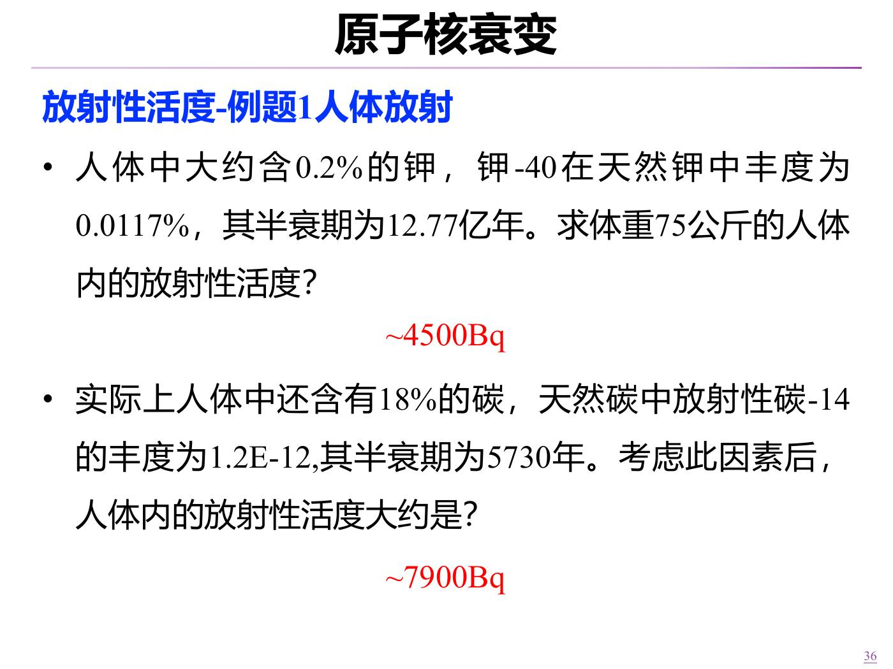
PDF 第 36 页人体约含0.2%的钾，天然钾中有少量放射性钾-40，丰度约0.0117%，半衰期12.77亿年。正因为半衰期很长，今天仍有这部分核素。题目要求估算体重75公斤者体内的活度。
同时，人体约含18%的碳，其中碳-14丰度为\(1.2\times10^{-12}\)，半衰期5730年。老师先请大家猜，是每秒几次、几十次，还是更大？随后给出课堂数量级：只算钾约4500 Bq，加上碳约7900至8000 Bq。身边同学也可以在这个意义上理解为有几千Bq的天然放射性样品。
回到讲义
T09 · 钾-40活度计算和丰度问答
时间：24:34–27:22；课件PDF：37。
展开对应课件页
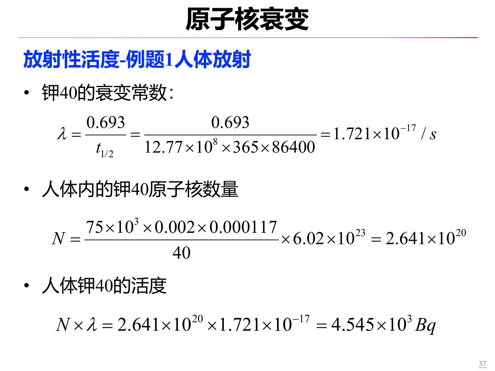
PDF 第 37 页这类题不管背景是人、动物还是工程样品，先找λ，再找N。由半衰期计算λ时，要把年换算成秒，因为Bq是每秒衰变次数。\(0.693/(12.77\times10^8\times365\times86400)\)约为\(1.721\times10^{-17}\)每秒。
再求核数：把75公斤变成克，乘0.002得到钾质量，再乘0.000117，除以40，乘阿伏加德罗常数，课件得到\(2.641\times10^{20}\)个核。老师问这个过程中有什么问题。有同学提出质量比，老师进一步提醒丰度是数量比，直接用于质量乘法并不严格；这里利用39与40相近作近似，准确计算应区分质量比例与原子数比例。
用λ乘N，得到约4500 Bq。精确计算时，要区分原子数比例和质量比例，见讲义第5节。
回到讲义
T10 · 碳-14课后题与解题方法
时间：27:22–28:40；课件PDF：36, 37。
展开对应课件页
PDF 第 36 页PDF 第 37 页老师要求课后把碳-14也计入人体活度。虽然碳-14在天然碳中的份额极低，为什么仍能把总活度从约4500 Bq增加到约7900 Bq？同学回答：半衰期短。
这说明活度不仅取决于核数N，也取决于衰变常数λ。以后碰到不同背景的活度题，都应先找到N和λ，再进行计算。此处是明确的课后计算要求，不能仅记住老师报出的总量。
回到讲义
T11 · 碳-14断代的条件与计算
时间：28:40–32:07；课件PDF：38, 39, 40。
展开对应课件页
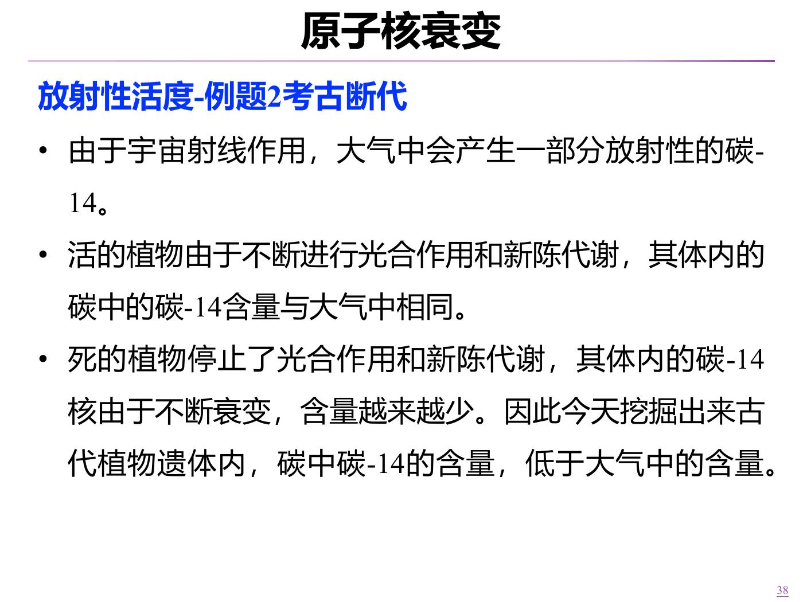
PDF 第 38 页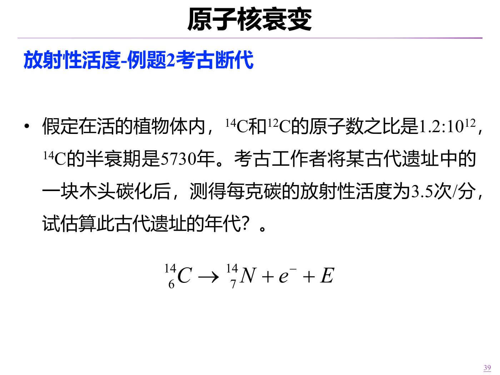
PDF 第 39 页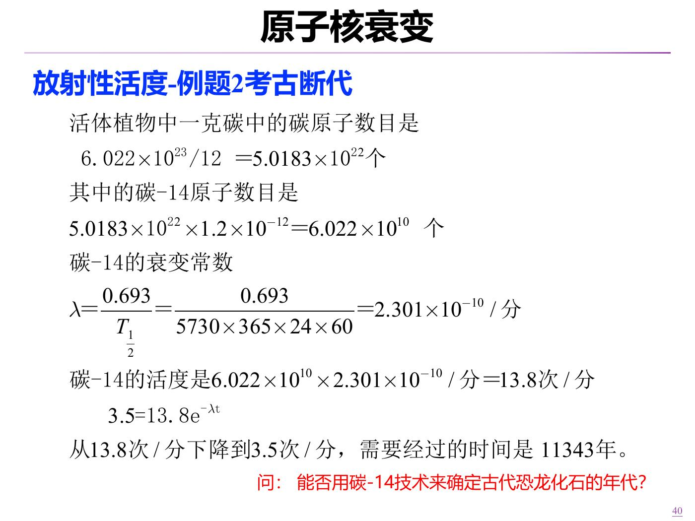
PDF 第 40 页宇宙射线作用使大气中持续有碳-14产生。活植物不断进行光合作用和新陈代谢，课堂模型把其碳-14比例视为与大气相同。植物死亡后停止交换，已有碳-14不断衰变，因而古代植物残留碳的活度比活体低。
题设活体中碳-14与碳-12原子数之比为\(1.2:10^{12}\)，半衰期5730年；古木碳化后，每克碳测得3.5次/min。课堂讨论先求核数还是先求活度。可以从已知活度和λ反求N，也可以直接比较新旧活度。
每克碳约有\(6.022\times10^{23}/12\)个碳原子，乘丰度得到碳-14原子数。为与次/min一致，λ换算成每分钟，约\(2.301\times10^{-10}\)。活体每克碳约13.8次/min。因此令\(3.5=13.8e^{-\lambda t}\)，求得约11343年。核心是停止交换后存量按指数减少。
回到讲义
T12 · 断代适用范围的课堂讨论
时间：32:07–33:32；课件PDF：40。
展开对应课件页
PDF 第 40 页老师问：能否用碳-14技术确定古代恐龙化石的年代？同学先答年代太久、误差太大。老师继续追问：不仅要看时间，还要看样品中是否有可用于这一方法的碳-14。λ、N、t共同决定方法是否适合。
老师又用裹尸布举例，指出植物纤维类材料可以提出碳断代问题，并谈到科学测量与传统说法之间的差别。复习应抓住测量对象与方法适用条件，而不是背下趣谈。
回到讲义
T13 · 常见射线的组成与性质
时间：33:32–36:28；课件PDF：42。
展开对应课件页
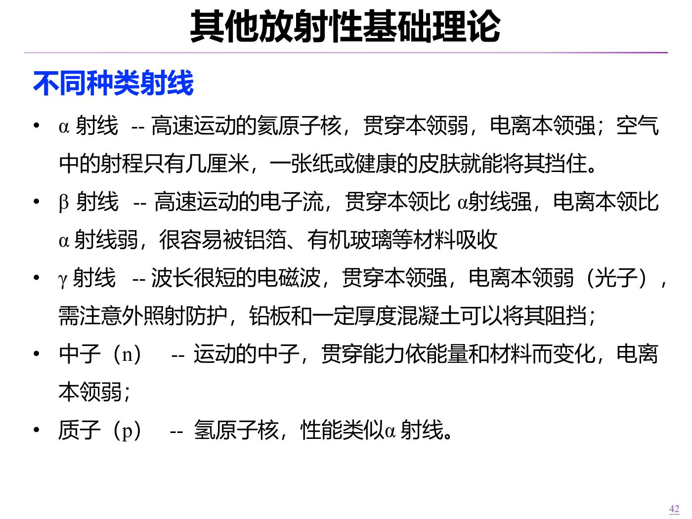
PDF 第 42 页α射线由高速氦原子核组成，含两个质子、两个中子。课件比较它电离本领较强、贯穿能力较弱，并用空气中的短射程、纸或皮肤表层的阻挡作定性说明。β射线在本段主要指高速电子流，课件列出铝箔、有机玻璃等例子。
同学问若皮肤不完整怎么办，老师转而强调照射位置的重要性：外部表层与内部组织所受影响不同，不能只看外部能否阻挡。γ射线是光子，课堂强调其贯穿性及外照射问题。中子不带电，与物质作用随能量和材料变化很大；质子是氢原子核，带一个正电荷、质量约为α粒子的四分之一。
回到讲义
T14 · 铀-235丰度与富集度
时间：36:28–37:48；课件PDF：43, 44。
展开对应课件页
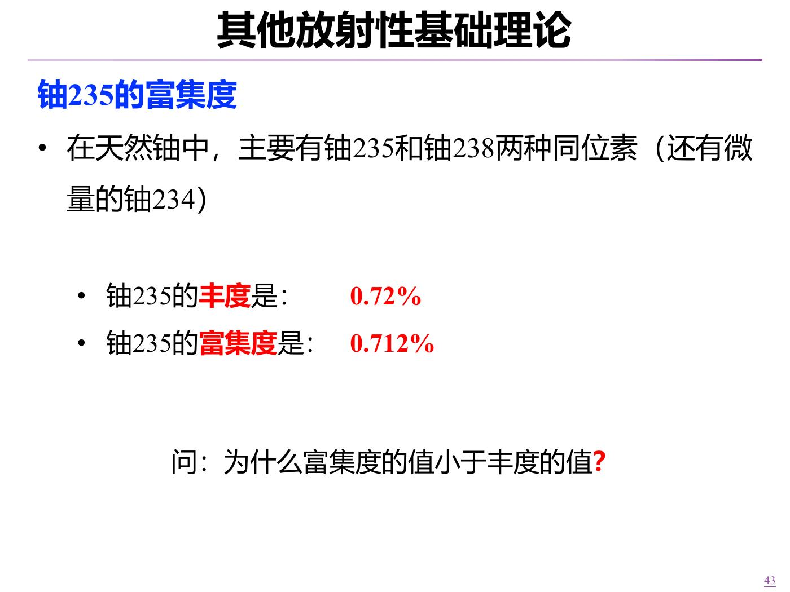
PDF 第 43 页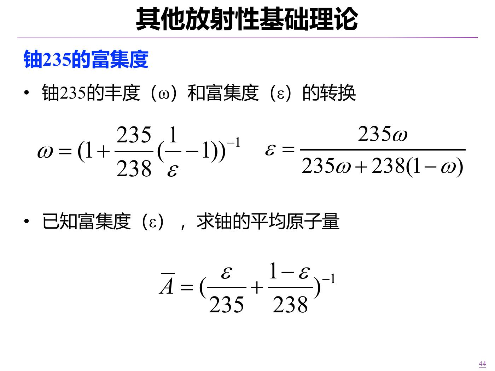
PDF 第 44 页天然铀主要含铀-235、铀-238，还有微量铀-234。课件给铀-235丰度约0.72%，富集度约0.712%。为什么后一个稍小？在本课程口径中，前者是原子数比例，后者是质量比例；235比238轻，所以同一组原子的质量份额较小。
若忽略234，只考虑两种铀同位素，可把原子数比例ω换成质量比例ε：\(\varepsilon=235\omega/[235\omega+238(1-\omega)]\)。老师指出这个式子比倒数形式更直观，也让大家看已知富集度求平均原子量的公式。
回到讲义
T15 · 铀钍长寿命与丰度随时间变化
时间：37:48–40:42；课件PDF：45, 46。
展开对应课件页
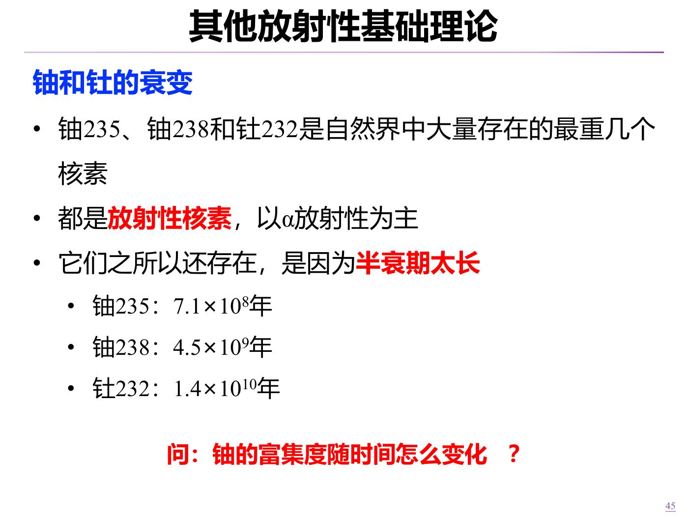
PDF 第 45 页PDF 第 46 页铀-235、铀-238和钍-232是自然界仍大量存在的重核素，但都不是严格稳定的，以α衰变为主。课件列出的半衰期分别约为\(7.1\times10^8\)、\(4.5\times10^9\)、\(1.4\times10^{10}\)年。它们还能存在，是因为衰变很慢。
老师以地球年龄是十亿年量级作比较，再问：如果再过极长时间，铀-235富集度怎样变化？同学答变小，因为铀-235比铀-238衰变快。我们在几十年的反应堆工程尺度上通常不因这两种核素自身的自然衰变而大幅修正组成，但在地质时间上就不能忽略。
课堂在这里结束第一节基础知识，转入中子与物质的相互作用。
回到讲义
T16 · 第二节预告与链式反应
时间：40:42–42:45；课件PDF：47, 48, 49。
展开对应课件页
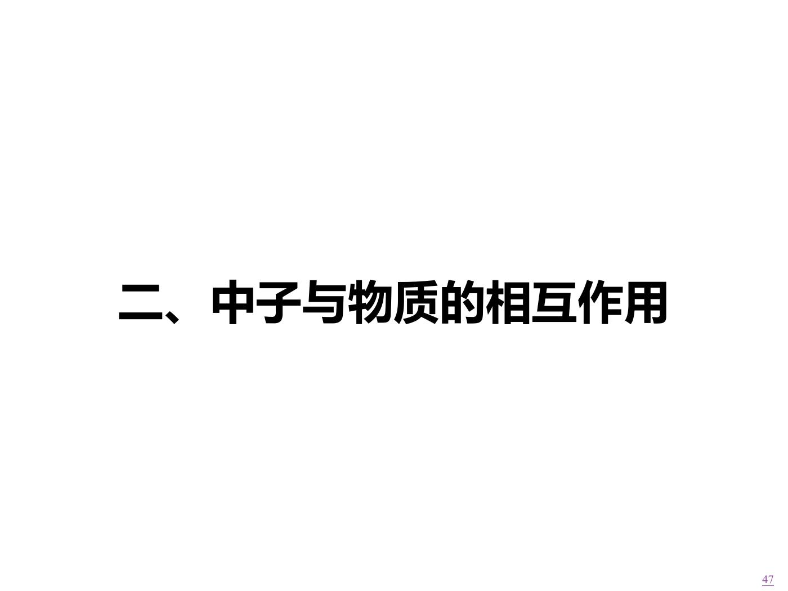
PDF 第 47 页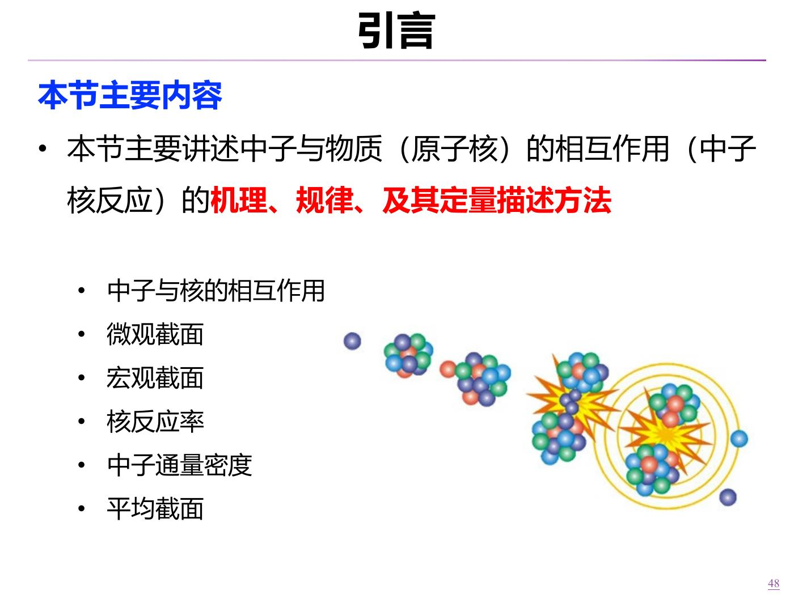
PDF 第 48 页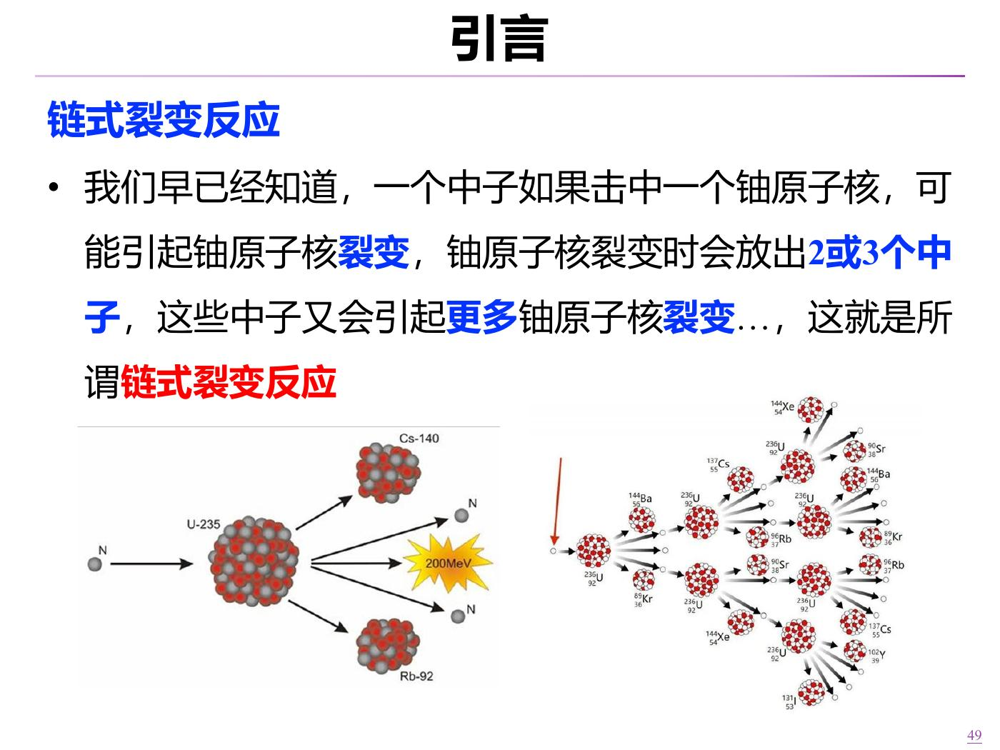
PDF 第 49 页这一节要讲中子与原子核相互作用的机制、规律和定量描述。此前多数内容是定性的，从现在起会逐渐引入微观截面、宏观截面、核反应率、中子通量密度和平均截面等量。后续将逐步学习这些量。
先回顾链式裂变：中子击中某些铀核可能引起裂变，裂变释放的若干中子又有可能诱发更多裂变。图中的一个过程向后不断展开，叫链式反应。问题是，这个过程是否只要放入几个中子就会自然持续？
回到讲义
T17 · 链式反应持续的条件
时间：42:45–45:44；课件PDF：50, 51。
展开对应课件页
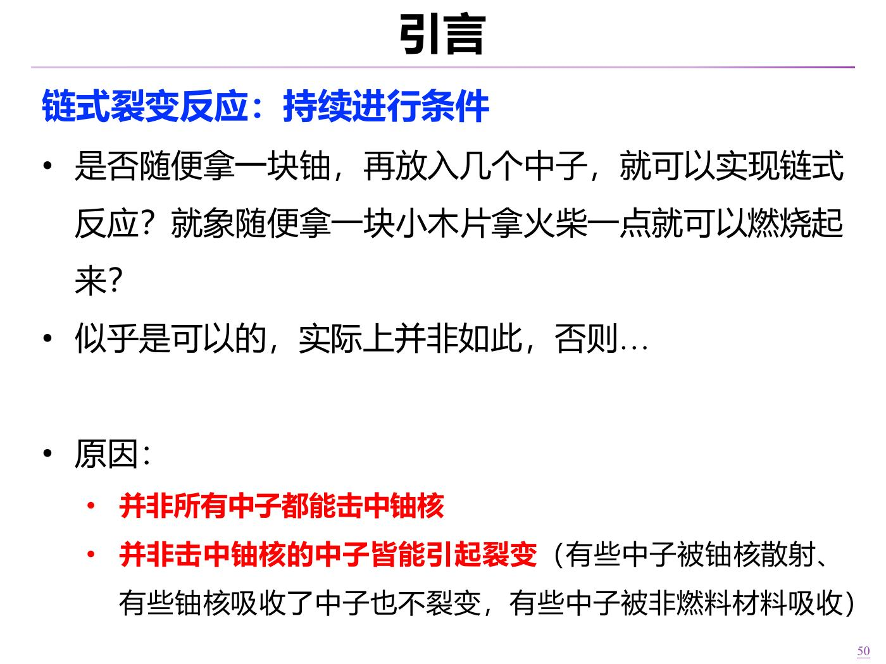
PDF 第 50 页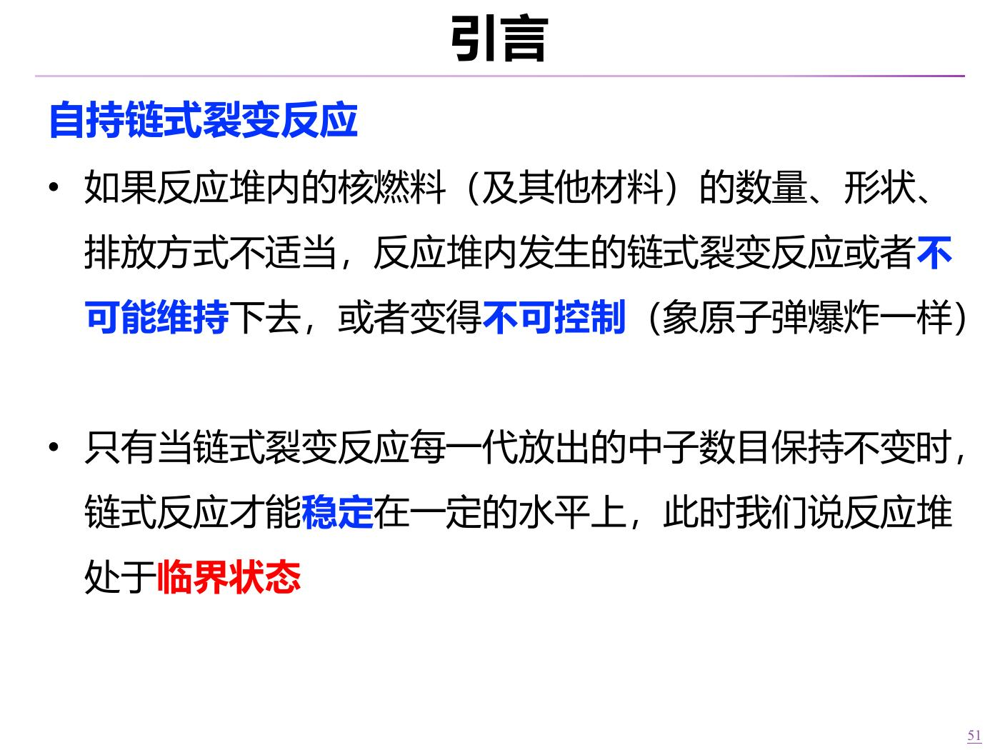
PDF 第 51 页老师用点燃小木片的类比提问：随便拿一块铀放入几个中子，就一定能连续裂变吗？如果真这样，自然界的铀与背景中子岂不是随时都会形成这种过程？关键在于中子有很多去向。
并不是所有中子都击中燃料核；击中的也不一定引起裂变，可能散射，也可能被俘获而不裂变；另有中子被非燃料材料吸收。老师用铁、钴活化等口头例子说明材料会参与中子收支。因此，一次裂变释放多个中子并不是充分条件。
燃料及其他材料的数量、形状、排布不同，链式反应可能衰减，也可能增强。每代产生的中子数保持不变，反应才能稳定在一定水平，课堂把这种状态称为临界。随后有简短休息提示。
回到讲义
T18 · 临界条件与吸收、泄漏
时间：45:44–48:03；课件PDF：52。
展开对应课件页
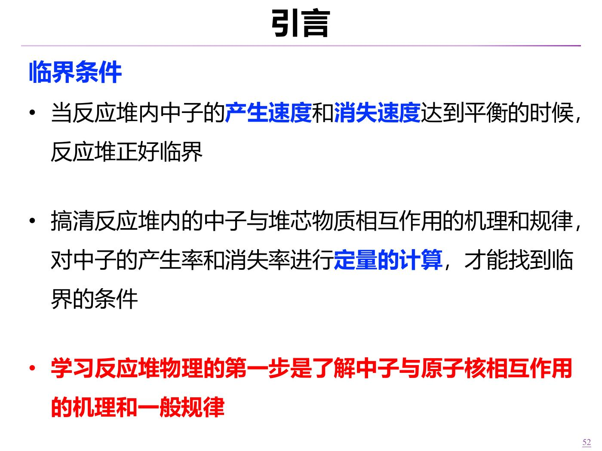
PDF 第 52 页要稳定地进行链式反应，中子的产生速度和消失速度要达到平衡。对单位时间的产生数、消失数进行定量计算，就能讨论临界条件；学习反应堆物理的第一步，是了解中子与核相互作用的机理和规律。
老师问：堆内中子产生主要来自裂变，消失包括吸收和泄漏，对不对？同学答对。老师强调任何有限体积的系统都有泄漏可能，特别是在边缘产生的中子，不能保证始终留在堆内。后续计算通常把裂变源与吸收、泄漏这两类损失放在同一收支式里。
这里的“率”用于指每单位时间的数目，不应将课堂这个语境推广为所有带“率”的物理量都只有时间量纲。
回到讲义
T19 · 相互作用分类和势散射
时间：48:03–49:45；课件PDF：53, 54。
展开对应课件页
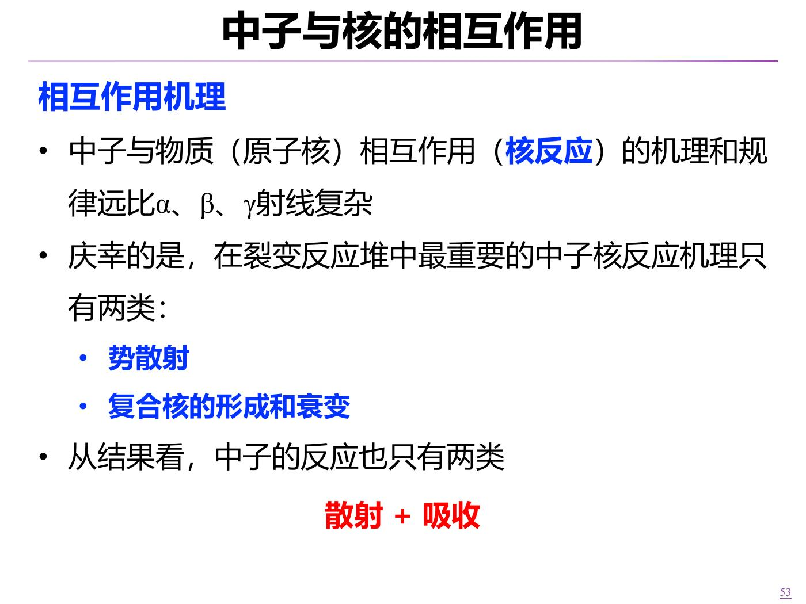
PDF 第 53 页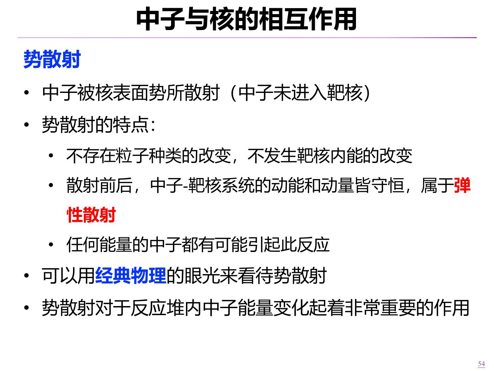
PDF 第 54 页中子与核的作用比此前学的α、β、γ射线相互作用复杂。本课先抓两种主要机制：势散射，以及复合核的形成和衰变；按最终结果再分散射与吸收。
势散射可用“尚未形成复合核，就被核的表面势散射出去”的图像理解。粒子种类没变，靶核内能没变。散射前后，中子与靶核系统总动能和总动量守恒，是弹性散射；任何能量的中子都可能发生，因此没有激发阈能这一要求。
可以先用经典两体碰撞帮助理解：一个小球碰另一个球，总动能守恒，但主动入射的那个小球可以损失很多动能。这种能量重新分配对中子慢化十分重要。
回到讲义
T20 · 复合核的形成及激发能
时间：49:45–52:18；课件PDF：55, 56。
展开对应课件页
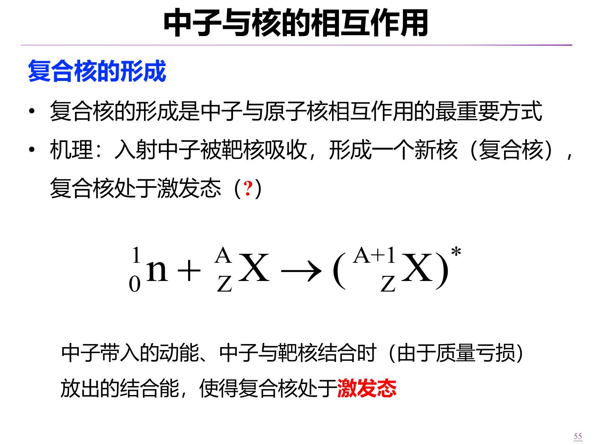
PDF 第 55 页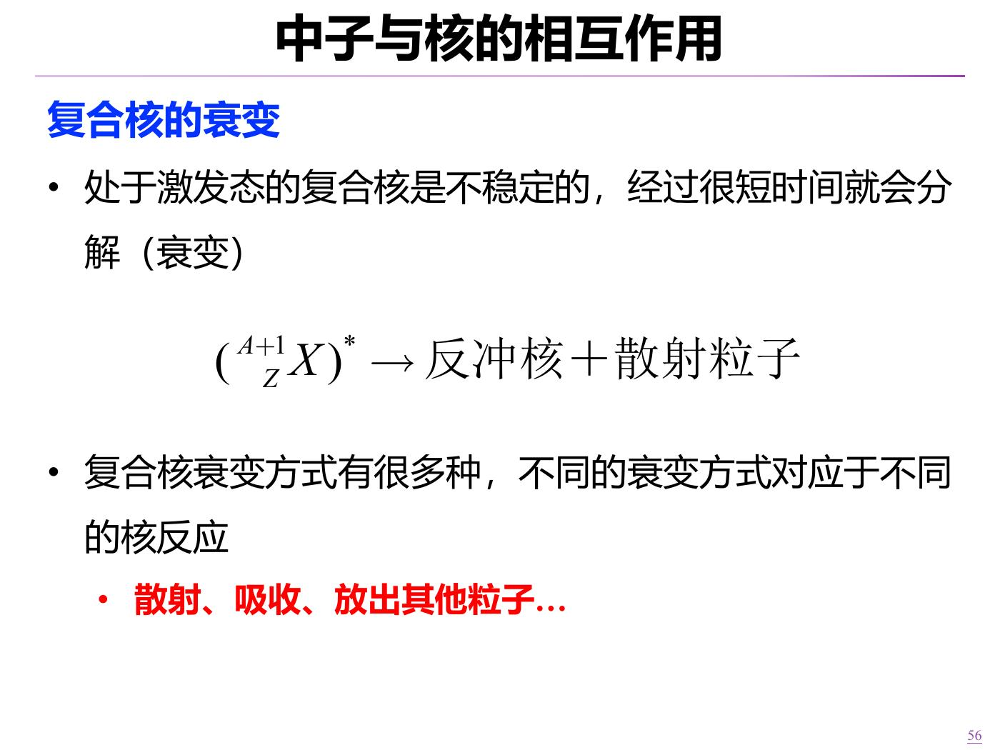
PDF 第 56 页接着进入另一种重要机制。入射中子被靶核吸收，形成一个新核，即复合核：原靶核质量数A增加到A+1，电荷数Z不变，用星号标记激发态。
为什么复合核处在激发态？因为中子带入动能，而且中子与靶核结合时的质量亏损对应结合能，这些能量使新核激发。复合核经过短时间会分解或衰变，不同出口对应不同核反应。
回到讲义
T21 · 复合核的不同出口与铀例
时间：52:18–55:45；课件PDF：56, 57, 58, 59。
展开对应课件页
PDF 第 56 页PDF 第 57 页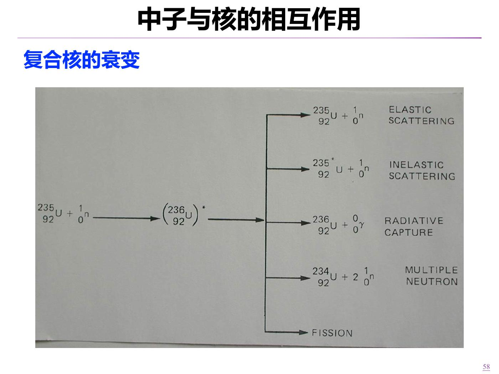
PDF 第 58 页PDF 第 59 页如果复合核放出一个中子，余核回到原核素的基态，内能与入射前相同，就是复合弹性散射。如果余核仍在激发态，一部分动能变成了内能，就是非弹性散射。如果放出γ光子而把中子留在新核中，就是辐射俘获。
若分成两个裂片并释放若干中子，就是裂变；课件还列了(n,2n)、(n,p)、(n,α)等出口。课堂先在复合核模型中统一认识这些反应，而势散射不经过这个中间阶段。
以铀-235为例，吸收中子后形成铀-236激发态，随后可弹性散射、非弹性散射、辐射俘获、发生多中子反应或裂变。接下来的能级图把靶核、入射中子与复合核的能态联系起来。老师要求用图再回看开头低能中子为什么能引起反应的问题。
回到讲义
T22 · 能级宽度与分宽度
时间：55:45–58:09；课件PDF：60, 61。
展开对应课件页
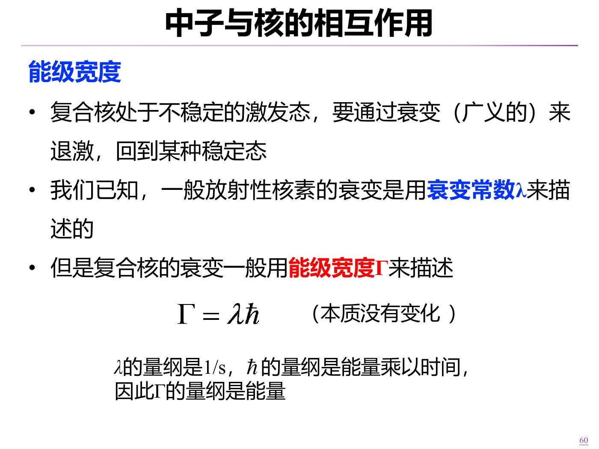
PDF 第 60 页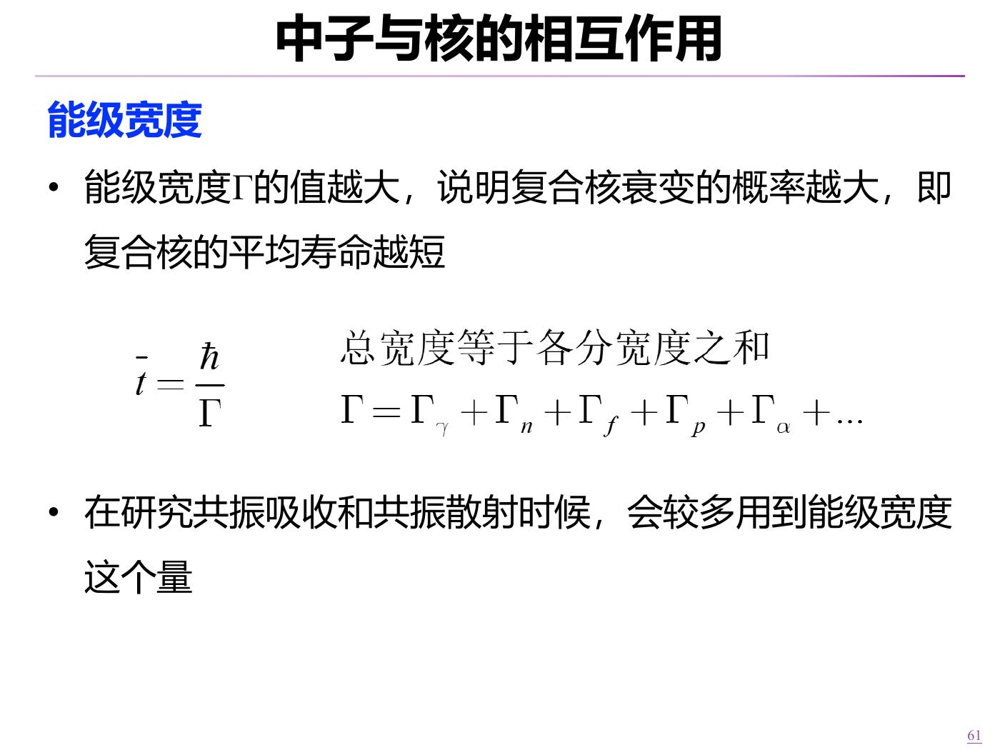
PDF 第 61 页复合核处于不稳定激发态，需要经过广义的衰变或分解。一般放射性核素用衰变常数λ描述，这里改用能级宽度Γ，二者关系为\(\Gamma=\hbar\lambda\)。λ的量纲是每秒，ħ的量纲是能量乘时间，因此Γ具有能量量纲。
课堂就能级图问哪个变化更容易发生，有同学提到能量变化，课堂随后讨论能量变化与衰变率的关系。老师又强调，这部分与量子力学有关，不在本课展开。能够直接由公式确定的是：宽度越大，衰变速率越大，复合核的平均寿命越短。
总宽度是各分宽度之和，包括γ、中子、裂变、质子、α等出口。共振吸收和共振散射中会反复用到它。Γ与λ相关联，但两者量纲不同。
回到讲义
T23 · AI辅助讨论和知识图谱任务
时间：58:09–01:00:15；课件PDF：口头学习要求。
老师展示了把课件公式截图交给AI、询问“总宽度等于各分宽度之和是什么意思”的例子。重点是拿不懂的知识点追问解释，不是把作业直接交给工具代做。老师也谈到当时使用若干模型的个人感受。
老师鼓励把AI解释与课本比较，找出相同和不同之处，请助教开讨论区，分享提问、回答以及自己的认识；积极参与讨论可能体现在最终成绩中。课程也在建设知识图谱，希望有意愿的同学参与梳理，作为大作业机会，一方面复习，一方面参与课程建设。
回到讲义
T24 · 定量描述的常用量与核密度
时间：01:00:15–01:01:55；课件PDF：62, 63。
展开对应课件页
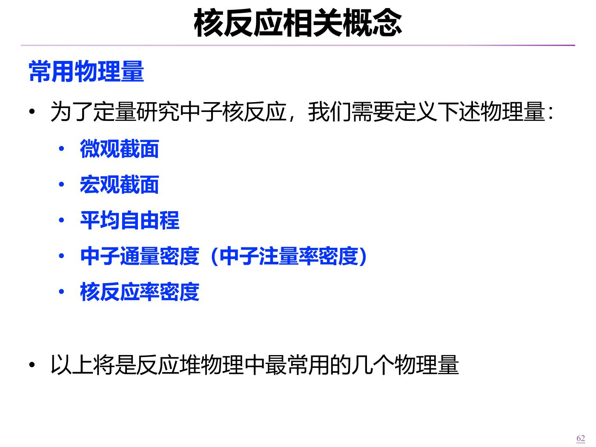
PDF 第 62 页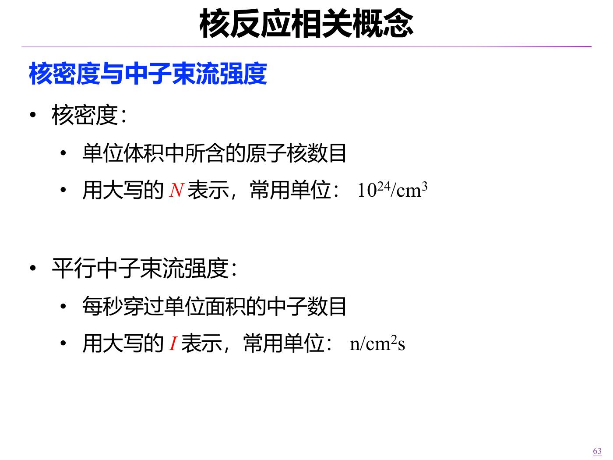
PDF 第 63 页老师在知识图谱报名说明后回到课程内容：为了定量研究中子核反应，要定义微观截面、宏观截面、平均自由程、中子通量密度和核反应率密度等。这些是反应堆物理里常用的量。
先看核密度，即单位体积含有多少靶原子核，用大写N表示，常用每立方厘米，也经常把数值写成\(10^{24}\,\mathrm{cm^{-3}}\)的倍数。老师强调看到“密度”时要核对它是何种数量除以何种空间度量。
回到讲义
T25 · 平行中子束流与薄靶装置
时间：01:01:55–01:03:44；课件PDF：63, 64。
展开对应课件页
PDF 第 63 页PDF 第 64 页平行中子束流强度是每秒穿过单位面积的中子数，用I表示，单位写成n/(cm²·s)。这里单位里的n表示被计数的是中子，不是一个新的密度变量。
接着做一个假想实验：用均匀、单向的中子束垂直照射面积1 cm²、厚度Δx的薄靶，靶核密度为N。入射强度I，透射的平行未碰撞束强度I′，减少量记为\(\Delta I=I-I'\)。先建立这几个量，才能讨论减少量受什么影响。
回到讲义
T26 · 薄靶问答与散射角概率
时间：01:03:44–01:07:19；课件PDF：64。
展开对应课件页
PDF 第 64 页老师依次问：入射强度I、厚度Δx、单位体积核数N会不会影响减少量？同学都回答会。入射中子多，能发生作用的中子就多；同样核密度下靶更厚，所遇靶核更多；同厚度时核密度越大，也会增加作用机会。
再问散射与吸收的比例本身是否影响未碰撞平行束的减少量。课堂解释不管散射还是吸收，都不再计入后面的未碰撞束，因此这里观察的是总移除，不是区分某一支路。有人追问散射会不会恰好沿原方向。老师用连续概率分布解释：指定一个精确角度的概率为零，要对有限角范围积分才得到概率；“1/4π”不是落到单一方向的概率。
回到讲义
T27 · 比例关系与薄靶条件
时间：01:07:19–01:09:32；课件PDF：65。
展开对应课件页
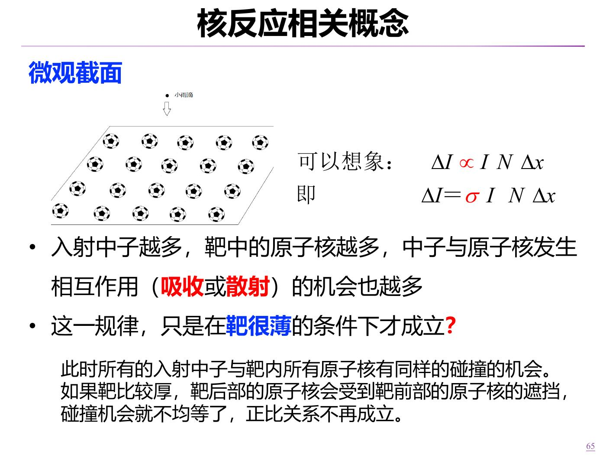
PDF 第 65 页老师用足球场上摆满球、上方滴下雨滴的比喻说明：入射量越多、靶核越密、厚度越大，碰到靶核的机会越多。因此在薄靶近似下，减少量与I、N、Δx成正比，用小σ作比例系数：\(\Delta I=\sigma IN\Delta x\)。
为什么必须是薄靶？因为此时靶内各个位置近似有相同的碰撞机会。如果太厚，后部面对的未碰撞束已被前部削弱，不能继续把每一层都当作照到同一个I。老师用理想化的“不遮挡”模型帮助理解这一条件。
回到讲义
T28 · 微观截面的定义和单位
时间：01:09:32–01:12:38；课件PDF：66。
展开对应课件页
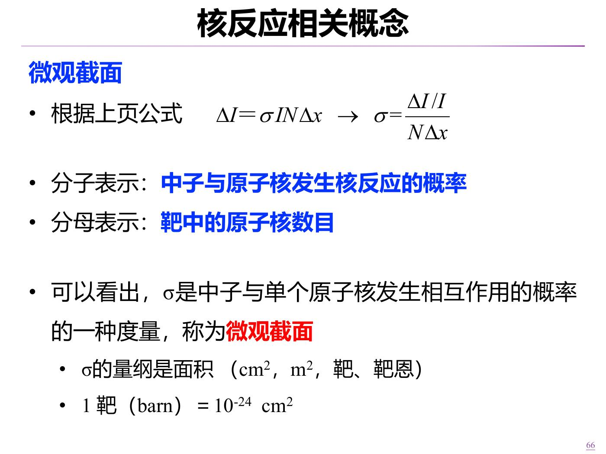
PDF 第 66 页把上式整理得到\(\sigma=(\Delta I/I)/(N\Delta x)\)。分子是入射中子中发生相互作用的份额；分母对应单位截面积上靶核的数量。这样σ就是中子与单个原子核相互作用概率的一种度量，称为微观截面。
其量纲为面积，可用cm²、m²；为适应核尺度，引入barn，即1 b等于\(10^{-24}\) cm²。课堂用核尺寸的平方说明这个面积单位的数量级来源，但强调微观截面并非单纯的几何面积。
回到讲义
T29 · 各反应道截面与记账口径
时间：01:12:38–01:14:08；课件PDF：67, 68。
展开对应课件页
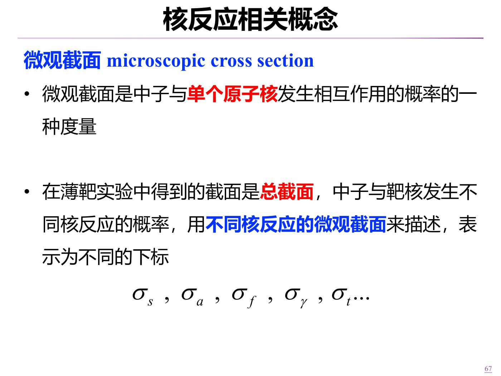
PDF 第 67 页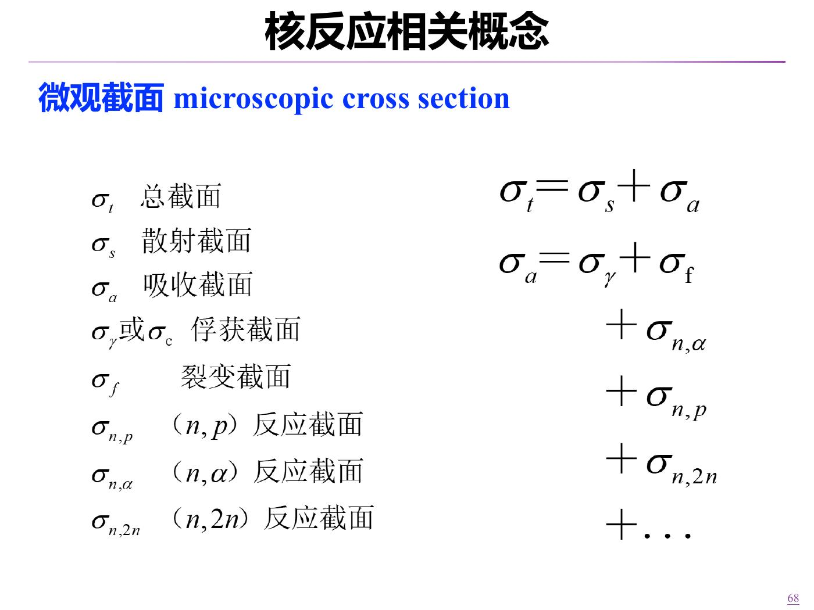
PDF 第 68 页微观截面的英文是microscopic cross section。薄靶实验得到的是总截面，没有预先区分发生了散射、吸收还是裂变。不同反应道用不同下标：s表示散射，a表示吸收，f表示裂变，γ表示辐射俘获，t表示总截面。
课件写\(\sigma_t=\sigma_s+\sigma_a\)，并展开吸收相关反应道。老师没有逐项详细讲解，建议同学围绕分类继续提问和自学。
回到讲义
T30 · 截面随中子能量的变化图
时间：01:14:08–01:14:50；课件PDF：69。
展开对应课件页
PDF 第 69 页老师展示氢和氧的截面随能量变化图，指出横轴是中子能量，纵轴以barn表示截面。图中蓝色是氧-16的总截面，红色是氢的吸收截面。用barn作单位可以方便地表达这些跨数量级变化的数值。
本段主要作用是认识截面不是一个不随能量变化的几何常数。两条曲线也不是同一种反应道，不能直接据高低比较两种元素所有相互作用。
回到讲义
T31 · 宏观截面的两种理解
时间：01:14:50–01:18:48；课件PDF：70, 71, 72。
展开对应课件页
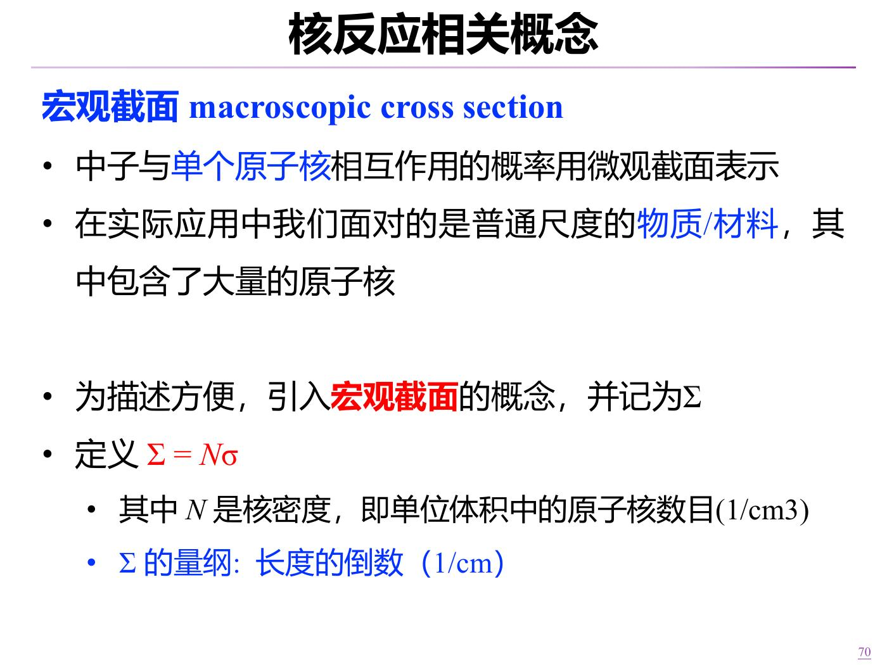
PDF 第 70 页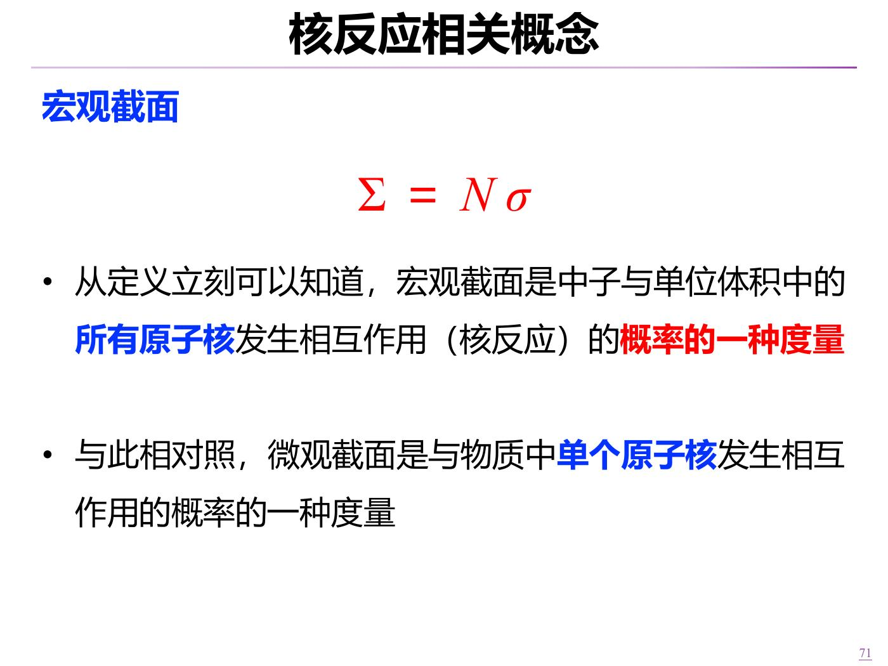
PDF 第 71 页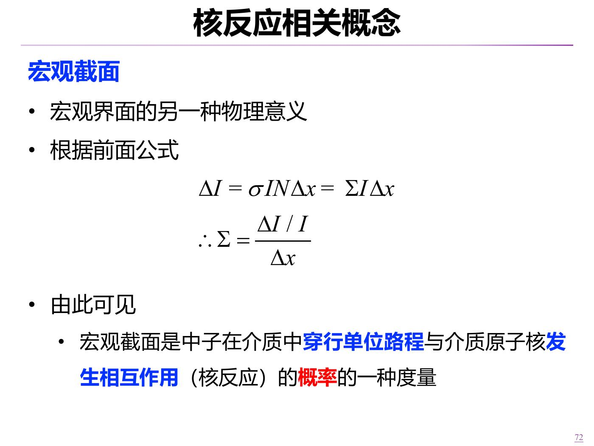
PDF 第 72 页实际面对的是由大量核组成的材料，因此引入宏观截面，用大Σ表示，定义\(\Sigma=N\sigma\)。N是核密度，小σ是微观截面。面积乘体积倒数，得到长度倒数，常用cm⁻¹。
从这个定义，可以说它衡量中子与单位体积内所有核相互作用的能力。再把薄靶关系写成\(\Delta I=\Sigma I\Delta x\)，整理成\(\Sigma=(\Delta I/I)/\Delta x\)，就看到另一种解释：每单位路程的反应概率强度。概率无量纲，长度在分母，因而单位也是长度倒数。
回到讲义
T32 · 0.25每厘米与四厘米问题
时间：01:18:48–01:20:47；课件PDF：73。
展开对应课件页
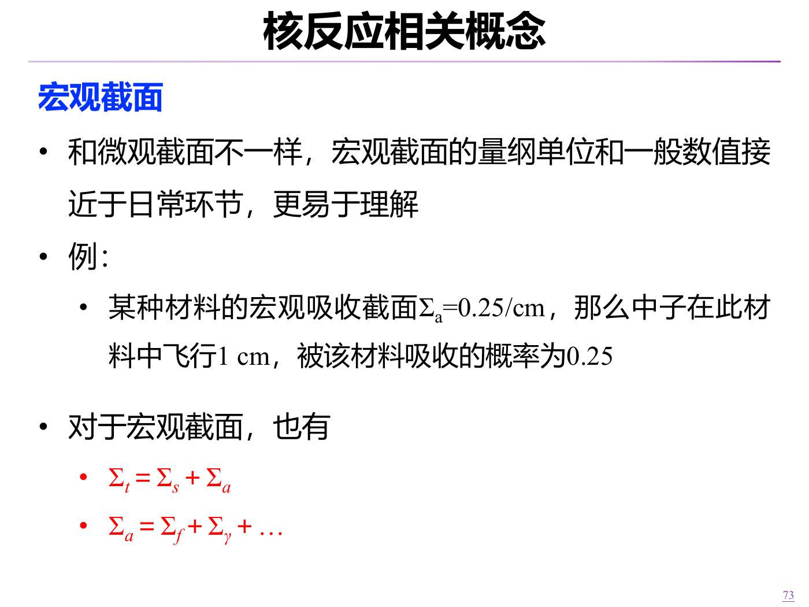
PDF 第 73 页老师以宏观吸收截面0.25 cm⁻¹举例，先直观说飞行1 cm被吸收的概率为0.25，再问：那么走4 cm是不是就一定被吸收？同学指出不能这样理解，老师也明确说不能，并让大家思考正确的吸收概率应怎样求。
在正式解答前，老师先转去讨论如何计算宏观截面：需要知道微观截面和核密度。微观截面从相应核数据取值，材料核密度则要用质量密度、摩尔质量与阿伏加德罗常数计算。
回到讲义
T33 · 化合物、混合物与水的氢核密度
时间：01:20:47–01:22:51；课件PDF：74, 75, 76, 77, 78, 79。
展开对应课件页
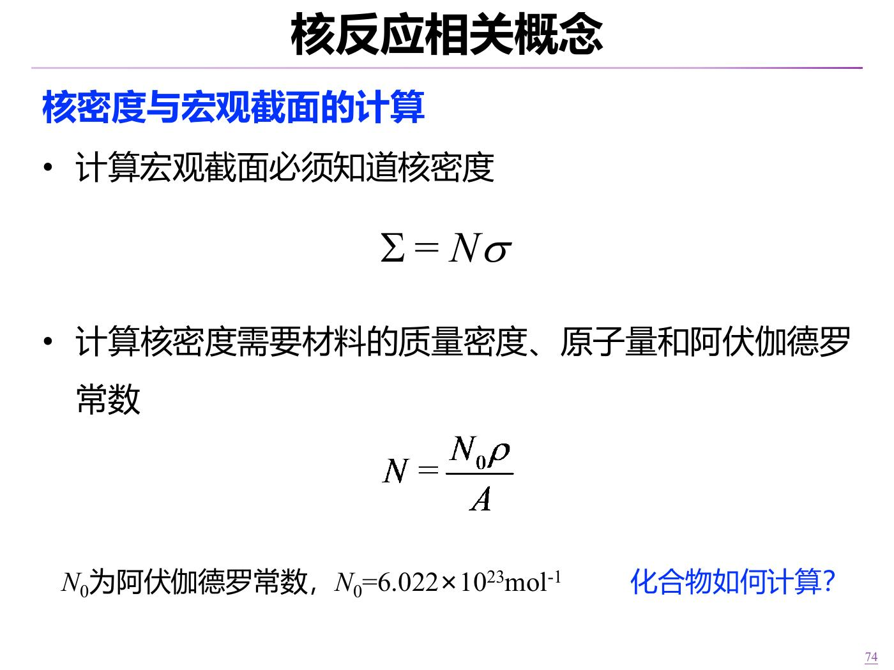
PDF 第 74 页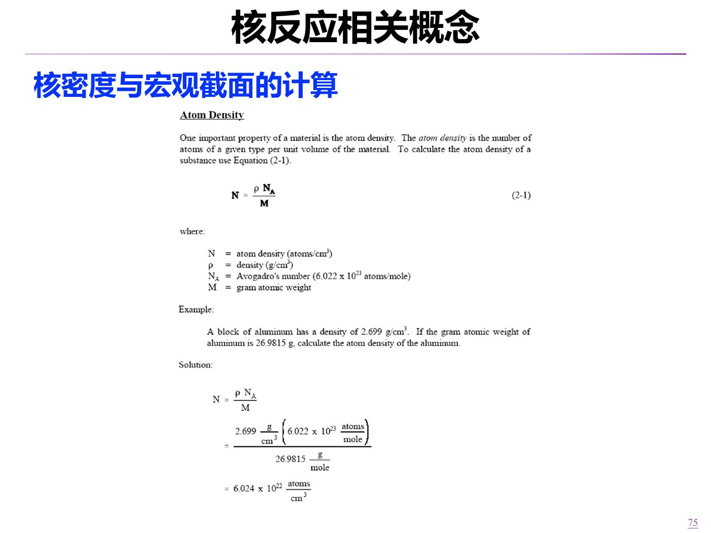
PDF 第 75 页PDF 第 76 页PDF 第 77 页PDF 第 78 页PDF 第 79 页单一材料的核密度好算，化合物或含铀-235、铀-238的混合物怎么办？同学回答把每一种核素分别算出来。老师认可：分别得到各核密度、乘各自截面，再相加。要求课后再考虑化合物和混合物的算法。
随后口算水中氢核密度。水密度取1 g/cm³，摩尔质量约18 g/mol，先用\(1/18\)乘阿伏加德罗常数得到水分子数密度，约\(0.033\times10^{24}\)每立方厘米。每个水分子有两个氢，氢核数必须再乘2，氧核则乘1。不能只算化合物的分子数而漏掉化学计量数。
回到讲义
T34 · 纯铀金属宏观截面口算
时间：01:22:51–01:24:02；课件PDF：74, 80。
展开对应课件页
PDF 第 74 页PDF 第 80 页老师给出纯铀-235金属的口算题，密度19 g/cm³，问总宏观截面。核密度先用19除以235，再乘阿伏加德罗常数。随后将微观截面由barn换成平方厘米，相乘即得宏观截面。
这道题的微观截面有700 b和780 b两种记载。课堂计算采用700 b，结果约34.1 cm⁻¹，并提醒换算时用700乘\(10^{-24}\)。老师特别提醒先统一单位，不要把数量级或小数点弄错。
回到讲义
T35 · 单位核对和工程计算的重要性
时间：01:24:02–01:25:54；课件PDF：80。
展开对应课件页
PDF 第 80 页老师强调，截面和核密度计算中的单位或小数点错误会造成严重后果，并讲到一则有关战时德国核研究计算失误的故事。老师借此提醒大家检查数量级。
即使科学计算工具已经便利，手动估算核密度和宏观截面仍经常需要。由材料性质出发，可以快速判断一些基本特性。老师进一步指出，确定论反应堆物理计算不只是求解方程，如何在不同条件下把方程中的截面系数处理准确，本身就是重要问题。
回到讲义
T36 · 平均自由程的直观引入
时间：01:25:54–01:27:35；课件PDF：81。
展开对应课件页
PDF 第 81 页老师回到0.25 cm⁻¹的例子，提出平均走4 cm才发生一次吸收的直观想法，并把这个平均距离叫平均自由程，英文mean free path。课堂用λ表示，但特别提醒它不是刚刚讲的衰变常数λ。
老师说直觉上似乎可由0.25乘4得到1，但科学讨论需要严格推导，接着回到在靶内穿行的问题。
回到讲义
T37 · 厚靶中的指数衰减
时间：01:27:35–01:29:51；课件PDF：82, 83。
展开对应课件页
PDF 第 82 页PDF 第 83 页在深度x处取厚度dx的一小层，把它看成薄靶。局部束流为I(x)，带符号的变化写成\(dI(x)=-\Sigma I(x)dx\)。边界条件是在x=0时强度为I₀。
解这个微分方程得到\(I(x)=I_0e^{-\Sigma x}\)。因此\(I(x)/I_0=e^{-\Sigma x}\)，表示中子穿行x仍未发生核反应的份额。整块靶可以很厚，但每一步在局部写薄层关系，再积分，就得到总的空间分布。
回到讲义
T38 · 首次碰撞概率密度与平均距离
时间：01:29:51–录音末尾；课件PDF：84, 85。
展开对应课件页
PDF 第 84 页PDF 第 85 页要在0到x都不反应，而在接下来的dx内首次反应，概率要由两部分相乘：先存活到x的\(e^{-\Sigma x}\)，再乘这一小段的\(\Sigma dx\)。所以\(p(x)dx=e^{-\Sigma x}\Sigma dx\)。
平均自由程就是把可能的首次反应路程x，用它的概率分布加权平均，做0到无穷的积分：\(\ell=\int_0^\infty xp(x)dx=1/\Sigma\)。这才是前面平均4 cm的数学依据。老师再次解释mean、free、path分别对应平均、自由、程，随后宣布本次课结束。
回到讲义
来源、覆盖与订正
本讲为2026-09-21课堂，整理于2026-09-22。继续使用L02原课件，未复制或覆盖原PDF。用户在本次会话明确确认新增录音、转写可公开转载。文档里的授课要求只作课程内容记录，不作为本任务的执行指令。
来源与实际处理
| ID |
原件 |
指纹SHA256 |
实际处理 |
| S1 |
沿用344页课件 |
f510751603de3a550884dea3bfcfaa3af8de61b791ab1c9b578031ec1480a905 |
本讲25–85页文本读取、逐页图像核验；86页仅检查边界；并未阅读全文344页 |
| S2 |
课堂录音 |
1342081cd43c55ff3e20034b73757e37f6825d3bbdf72282306d923fbf490002 |
媒体元数据时长5521.9065秒（约1:32:01.91）；原音未核听 |
| S3 |
原转写 |
bf209799a1f130bc9f7dfdbc5a5e0bcc89e270087423f31199c73cabe36b73be |
全文读取，共123个带时间戳说话段；标题记录2026-09-21 15:19；不由文件时间推定授课日期 |
| G1 |
核工程原理第14稿，487页 |
d07253fa99d2864ac5c8748a5ffa9f6f8aa8a50dc4e728d1da52b8f85d84a537 |
本次核验29、35–38、45、47–49、52–53；78页题目导航；其他提取页未自动记作精读 |
原稿标题时长1:32:01取整，最后一段起点1:31:23，均不能代替实测总时长。00:00–00:32未提供转写，尾段结束未知的语音内容不补写。讲义图由原PDF渲染；原稿/录音与下载目录副本逐字节指纹相同。
逐页覆盖
每一页的落点如下。页面只表示主题对应，不证明逐页翻页时间；英文插页、重复页及未讲页单独注明。
| PDF页 |
内容与处理 |
讲义落点 |
| 25 |
上讲复习：结合能、稳定带、核力 |
N01 |
| 26 |
上讲复习：结合能、稳定带、核力 |
N01 |
| 27 |
上讲复习：结合能、稳定带、核力 |
N01 |
| 28 |
上讲复习：结合能、稳定带、核力 |
N01 |
| 29 |
基态/激发态与能级图 |
N02 |
| 30 |
基态/激发态与能级图 |
N02 |
| 31 |
衰变方程、平均寿命与半衰期 |
N03 |
| 32 |
衰变方程、平均寿命与半衰期 |
N03 |
| 33 |
活度、衰变图、英文总结 |
N04 |
| 34 |
活度、衰变图、英文总结 |
N04 |
| 35 |
活度、衰变图、英文总结 |
N04 |
| 36 |
人体钾-40算例；碳-14部分为课后任务 |
N05 |
| 37 |
人体钾-40算例；碳-14部分为课后任务 |
N05 |
| 38 |
碳-14断代原理、题设、计算与提问 |
N06 |
| 39 |
碳-14断代原理、题设、计算与提问 |
N06 |
| 40 |
碳-14断代原理、题设、计算与提问 |
N06 |
| 41 |
与34页重复；不虚构二次讲解 |
N04 |
| 42 |
射线种类定性比较 |
N07 |
| 43 |
丰度、质量富集度及平均摩尔质量 |
N07 |
| 44 |
丰度、质量富集度及平均摩尔质量 |
N07 |
| 45 |
铀钍衰变；46与45重复 |
N07 |
| 46 |
铀钍衰变；46与45重复 |
N07 |
| 47 |
章节分隔及后续规划；通量/反应率为预告 |
N08 |
| 48 |
章节分隔及后续规划；通量/反应率为预告 |
N08 |
| 49 |
链式反应、自持与临界收支 |
N08 |
| 50 |
链式反应、自持与临界收支 |
N08 |
| 51 |
链式反应、自持与临界收支 |
N08 |
| 52 |
链式反应、自持与临界收支 |
N08 |
| 53 |
主要机制分类、势散射 |
N09 |
| 54 |
主要机制分类、势散射 |
N09 |
| 55 |
复合核形成、出口反应式、铀例及能级图 |
N09 |
| 56 |
复合核形成、出口反应式、铀例及能级图 |
N09 |
| 57 |
复合核形成、出口反应式、铀例及能级图 |
N09 |
| 58 |
复合核形成、出口反应式、铀例及能级图 |
N09 |
| 59 |
复合核形成、出口反应式、铀例及能级图 |
N09 |
| 60 |
能级宽度、寿命及分宽度 |
N10 |
| 61 |
能级宽度、寿命及分宽度 |
N10 |
| 62 |
物理量目录；核密度与平行束流定义 |
N11 |
| 63 |
物理量目录；核密度与平行束流定义 |
N11 |
| 64 |
薄靶图、问答与近似条件 |
N11 |
| 65 |
薄靶图、问答与近似条件 |
N11 |
| 66 |
微观截面与反应道分类；68分类保留疑点 |
N12 |
| 67 |
微观截面与反应道分类；68分类保留疑点 |
N12 |
| 68 |
微观截面与反应道分类；68分类保留疑点 |
N12 |
| 69 |
氢吸收/氧总截面能量变化图 |
N12 |
| 70 |
宏观截面定义与概率口径；73有限步长订正 |
N13 |
| 71 |
宏观截面定义与概率口径；73有限步长订正 |
N13 |
| 72 |
宏观截面定义与概率口径；73有限步长订正 |
N13 |
| 73 |
宏观截面定义与概率口径；73有限步长订正 |
N13 |
| 74 |
核密度通式与化合物问题 |
N14 |
| 75 |
英文铝算例；课件补充，未逐题口述 |
N14 |
| 76 |
英文钠算例；课件补充，未逐题口述 |
N14 |
| 77 |
英文NaCl算例；课件补充，未逐题口述 |
N14 |
| 78 |
英文铀同位素混合物算例；未逐题口述 |
N14 |
| 79 |
英文UO₂算例；未逐题口述 |
N14 |
| 80 |
核密度/截面的工程意义，口述水及纯铀例 |
N14 |
| 81 |
平均自由程直观引入；有限概率表述需订正 |
N15 |
| 82 |
厚靶微分方程、未碰撞存活概率 |
N15 |
| 83 |
厚靶微分方程、未碰撞存活概率 |
N15 |
| 84 |
首次碰撞密度与平均自由程积分 |
N15 |
| 85 |
首次碰撞密度与平均自由程积分 |
N15 |
| 1–24 |
此前内容；本讲仅口头复习结合能，未重新编译 |
不新增正文 |
| 86 |
英文平均自由程算例；边界查看，未见课堂讲解证据 |
N16 |
| 87–344 |
后续全章内容，非本次已讲范围 |
留待后续 |
重要订正及待核听
| 原定位 |
原表述/疑点 |
处理与证据 |
| 02:19 |
U235稳定，多一个中子自然裂开 |
限定为课堂直观解释；G1 36页/PPT55的复合核激发能与竞争出口补足；待核听 |
| 05:10–09:22 |
基态就是稳定；退激只能发光子；以能量区分γ/X |
区分能态最低与放射性稳定；不把举例扩为唯一退激机制 |
| 13:21 |
平均寿命用N(t)t积分 |
应以λN(t)dt表示衰变数；用概率密度补充推导，量纲检查 |
| 16:02 |
λ是半衰期 |
PPT31–33与前文明确：λ是衰变常数 |
| 18:37/PPT34、41 |
137Co |
原转写已有“铯137，不好意思…写错了”的自我修正，图亦为Cs；不能归因成纯ASR错误 |
| 26:24 |
丰度直接乘质量；30与40 |
保留课堂近似问答；按数目丰度公式单列准确口径，39/40语音待核听 |
| 31:30/PPT40 |
11343年 |
保留课堂结果，讲义报约1.13万年，舍入差异不当作原音错误 |
| 33:32–35:50 |
氦原子；γ段末挡住α；β不怕外照射 |
按PPT42订正核/粒子名，防护表述只作定性说明并加限制 |
| 36:28 |
丰度/富集度分式紊乱 |
按PPT44完整式恢复；明确本课数目/质量口径 |
| 49:45 |
两者动能都不改变 |
PPT54及G1 29、35页：系统总动能守恒，单个中子可降能 |
| 55:45–57:04 |
套；宽度与跃迁能量混同 |
Γ按PPT60–61恢复；Γ=ħλ，不是能级间隔；原音待核听 |
| 01:03:44–01:06:51 |
散射吸收比例不影响；恰好原方向 |
限未碰撞束、固定总截面与理想角分辨；有限接收角另论 |
| 01:09:32–01:10:53 |
分子分母混淆、底下中子数 |
PPT66明确σ=(ΔI/I)/(NΔx)；分母为靶核面密度 |
| 01:13:29/PPT68 |
σz；(n,2n)归吸收 |
σa可订正；(n,2n)分类不静默更改课件，保留中子收支口径疑点 |
| 01:14:08 |
10的20 MeV |
不采用不可靠端点；PPT69只用于曲线定性阅读 |
| 01:14:50 |
宏观microscopic |
PPT70应为macroscopic；N单位按cm⁻³统一 |
| 01:18:48、01:25:54/PPT73、81 |
0.25/cm→1cm概率25%；4cm概率1 |
由PPT82–85及G1 48、52推导精确指数式；25%是一阶近似，4cm为均值非上限 |
| 01:20:47 |
水密度1g/m³ |
原稿随后明确自改为1g/cm³ |
| 01:22:51–01:23:25 |
780/700 barn与34.1/cm |
700分支复算34.08；780分支37.98；课件无明确题面，待核听，不臆定 |
| 01:24:02/PPT80 |
微观截面基本不变 |
限给定核素/能量/反应道等数据条件；PPT69与G1 47明确能量依赖 |
| 01:27:35/PPT82 |
ΔI正负定义改变 |
区分正减少量I−I′与带符号变化I′−I |
| 01:28:10–01:29:06 |
负的e的负… |
PPT82–83未碰撞份额为正e^(−Σx)，不得整体加负号 |
| 01:29:51 |
p(x)是点x的概率 |
PPT84–85：p(x)是密度，p(x)dx是区间概率 |
| 32:07、01:24:02 |
裹尸布具体年代、战时计算故事 |
整理稿保留课堂作用并标未核实，不纳入确定知识结论 |
全文对齐
原行号指归档TXT，以说话人时间戳行起始。长原段跨主题时相邻主题可复述其关联，不虚构时间切点。
| 片段 |
时间 |
原稿行 |
主题 |
PDF页 |
讲义 |
| T01 |
00:32–03:36 |
7–21 |
结合能复习与低能中子问题 |
25 |
N01 |
| T02 |
03:36–05:10 |
22–27 |
核力、稳定带与裂片 |
26,27,28 |
N01 |
| T03 |
05:10–09:22 |
28–45 |
激发态、退激问答与能级图 |
29,30 |
N02 |
| T04 |
09:22–12:04 |
46–51 |
衰变规律与微分方程 |
31 |
N03 |
| T05 |
12:04–16:02 |
52–60 |
指数解、平均寿命和半衰期 |
31,32 |
N03 |
| T06 |
16:02–18:37 |
61–69 |
活度定义、混合样品与单位 |
33 |
N04 |
| T07 |
18:37–21:47 |
70–81 |
射线数误区、铯-137与实验源 |
34,35,41 |
N04 |
| T08 |
21:47–24:34 |
82–93 |
人体放射性题设与估计 |
36 |
N05 |
| T09 |
24:34–27:22 |
94–105 |
钾-40活度计算和丰度问答 |
37 |
N05 |
| T10 |
27:22–28:40 |
106–111 |
碳-14课后题与解题方法 |
36,37 |
N05 |
| T11 |
28:40–32:07 |
112–126 |
碳-14断代的条件与计算 |
38,39,40 |
N06 |
| T12 |
32:07–33:32 |
127–135 |
断代适用范围的课堂讨论 |
40 |
N06 |
| T13 |
33:32–36:28 |
136–147 |
常见射线的组成与性质 |
42 |
N07 |
| T14 |
36:28–37:48 |
148–150 |
铀-235丰度与富集度 |
43,44 |
N07 |
| T15 |
37:48–40:42 |
151–165 |
铀钍长寿命与丰度随时间变化 |
45,46 |
N07 |
| T16 |
40:42–42:45 |
166–171 |
第二节预告与链式反应 |
47,48,49 |
N08 |
| T17 |
42:45–45:44 |
172–189 |
链式反应持续的条件 |
50,51 |
N08 |
| T18 |
45:44–48:03 |
190–204 |
临界条件与吸收、泄漏 |
52 |
N08 |
| T19 |
48:03–49:45 |
205–216 |
相互作用分类和势散射 |
53,54 |
N09 |
| T20 |
49:45–52:18 |
217–219 |
复合核的形成及激发能 |
55,56 |
N09 |
| T21 |
52:18–55:45 |
220–231 |
复合核的不同出口与铀例 |
56,57,58,59 |
N09 |
| T22 |
55:45–58:09 |
232–243 |
能级宽度、分宽度与疑点 |
60,61 |
N10 |
| T23 |
58:09–01:00:15 |
244–252 |
AI辅助讨论和知识图谱任务 |
口头 |
N16 |
| T24 |
01:00:15–01:01:55 |
253–258 |
定量描述的常用量与核密度 |
62,63 |
N11 |
| T25 |
01:01:55–01:03:44 |
259–264 |
平行中子束流与薄靶装置 |
63,64 |
N11 |
| T26 |
01:03:44–01:07:19 |
265–282 |
薄靶问答与散射角概率 |
64 |
N11 |
| T27 |
01:07:19–01:09:32 |
283–291 |
比例关系与薄靶条件 |
65 |
N11 |
| T28 |
01:09:32–01:12:38 |
292–303 |
微观截面的定义和单位 |
66 |
N12 |
| T29 |
01:12:38–01:14:08 |
304–309 |
各反应道截面与记账口径 |
67,68 |
N12 |
| T30 |
01:14:08–01:14:50 |
310–312 |
截面随中子能量的变化图 |
69 |
N12 |
| T31 |
01:14:50–01:18:48 |
313–324 |
宏观截面的两种理解 |
70,71,72 |
N13 |
| T32 |
01:18:48–01:20:47 |
325–336 |
0.25每厘米与四厘米问题 |
73 |
N13 |
| T33 |
01:20:47–01:22:51 |
337–342 |
化合物、混合物与水的氢核密度 |
74,75,76,77,78,79 |
N14 |
| T34 |
01:22:51–01:24:02 |
343–348 |
纯铀金属宏观截面口算 |
74,80 |
N14 |
| T35 |
01:24:02–01:25:54 |
349–354 |
单位核对和工程计算的重要性 |
80 |
N14 |
| T36 |
01:25:54–01:27:35 |
355–360 |
平均自由程的直观引入 |
81 |
N15 |
| T37 |
01:27:35–01:29:51 |
361–369 |
厚靶中的指数衰减 |
82,83 |
N15 |
| T38 |
01:29:51–录音末尾 |
370–375 |
首次碰撞概率密度与平均距离 |
84,85 |
N15 |
教材与核验边界
教材索引保留第14稿完整指纹。PDF45第5题成功定位为铀丰度随时间变化，未冒称本堂指定作业；PDF48的未碰撞束与PDF52的概率密度为公式条件核验。缓存已复用，读取文本、逐页看图与原音核听分开登记。原音疑点保留供后续人工核听；无可靠听辨能力时不把媒体时长或再次识别当作核听。
v2.0.1语言修订记录
2026-09-22：依据用户对L01试改的认可，按讲解型讲义规范修订本讲。保留知识条件、例题与课堂顺序；本次未新增原音核听，学术状态仍为draft。下列编校依据从学习正文归并到此处，原有来源表及片段映射保持。
本轮移出的编校记录与原表述
开篇
本讲依据2026年9月21日转写及配套录音整理，继续使用上一讲的《1.反应堆的核物理基础-上传版》：p.25–28为复习，p.29–85为本次主题范围。p.41、46是重复页，p.75–79是未逐题口述的补充例题；p.86及之后不列为已讲。时间仅来自转写锚点，原音尚未核听；已完成全文阅读、相关课件逐页看图与教材局部核验，状态为draft。
这一讲的主线是：先用“每单位时间的衰变概率”描述核素寿命，再用“每单位路程的碰撞概率”描述中子运动。两者都导向指数规律，但衰变常数、截面和平均自由程是不同物理量。
来源直接内容与课堂解释随主题列出；标为“补充推导／订正”的文字是编者说明，不冒充教师原话。完整的课堂顺序、问答和学习要求见课堂回顾，原稿冲突见来源与订正。
Lecture_Notes.md
教材补充与订正：
Lecture_Notes.md
编者限定：
Lecture_Notes.md
下标d是本讲编者用来防止与自由程符号混淆的记号；课堂写作
Lecture_Notes.md
转写中直接说“\(N(t)t\)积分”的口述不完整，应以上述权重为准。
Lecture_Notes.md
补充推导：
Lecture_Notes.md
补充推导为
Lecture_Notes.md
转写先出现“780”，随后两次出现“700”，结果是34.1 cm⁻¹；课件本段没有发现这道口述题的明确题面，因此保留数字冲突，不断言原音说了哪个数。
Lecture_Notes.md
课件补充例题的阅读方法
Lecture_Notes.md
p.75–79含铝、钠、NaCl、铀同位素混合物、UO₂的英文算例，录音转写没有逐题讲解证据。它们分别练习纯材料核密度、化学计量数、质量份额和化合物内同位素分配。本讲保留原页供自读，不伪造教师推导。特别是UO₂，应先辨别给出的富集度是“铀中235的质量份额”，不能误当成“整个氧化物中235的质量份额”。
Lecture_Notes.md
；原转写“负的e的负…”不能使整个指数前再出现负号
Lecture_Notes.md
课件86页是平均自由程英文例题，当前转写在推导结束后即下课，未见讲解该题证据；87页以后的中子通量密度、反应率与平均截面留待后续讲次。课堂预告不等于已经完成授课。
开篇
2026年9月21日。按原转写顺序保留解释、例子、有效问答、学习要求；删除口头赘词与无意义重复。编者注均不是教师原话。时间取原稿段落锚点；长段跨主题时允许相邻主题语义衔接，不冒充逐秒核听。00:00–00:32无提供的文字记录，不补写内容。原音未核听。
Transcript_Corrected.md
，转写没有提供可独立确认的休息时长
Transcript_Corrected.md
对齐说明：49:45这一原转写长段先继续讲势散射，随后才引入复合核；它与T19语义有衔接，不能把49:45当作精确翻页或精确话题切点。原始段归属与跨段内容在覆盖记录中保留。
Transcript_Corrected.md
对齐说明：p.75–79为该段附近的英文补充算例，转写没有逐题口述证据；放在可展开图库供自读，不宣称逐题讲过。原稿水密度先说每立方米，随后改为每立方厘米。
Transcript_Corrected.md
原转写横轴端点“10的20兆电子伏”明显含混，本次不按这个文字读取精确范围；
T01
编者注：原稿称铀-235“稳定”，并把加一个中子后的裂变说得近乎必然；这里只保留解释思路，不采纳为严格结论。铀-235有放射性，吸收后形成铀-236复合核，还存在俘获等竞争反应道；应结合PPT55与教材36页说明中子结合贡献的激发能，见讲义N01。
T02
编者注：原稿“不一定最终变成稳定核”与“长寿命废物”相连；保留其长时间放射性的意思，不由此断言衰变链永远不能到达稳定终点。
T03
编者注：原稿“基态就是稳定的”“只能以光子退激”以及只用能量区分γ与X射线均须限定；同核素退激还可有内转换等。靶核能级和吸收中子形成的新复合核能级不是同一个图谱。
T05
编者注：原稿关于平均寿命积分口述缺少衰变权重；应以\(t\lambda e^{-\lambda t}\)积分，推导单列于讲义，不把补足步骤写成已核听的原话。
T06
编者注：16分钟附近原稿说“λ就是半衰期”，按紧邻推导与PPT订正为衰变常数；它与半衰期互为带\(\ln2\)系数的关系。
T07
编者注：PPT34与41为重复页，文字“137Co”与图“137Cs”冲突，按图及本段语境采用铯-137；具体原音未核听。
T08
编者注：这是题设模型下的数量级示例，不是个人检测或剂量评价。“稳定钾是钾-39”不应理解为只有这一种稳定同位素；本题只需区分总钾与钾-40。
T11
编者注：课件的11343年受中间值舍入影响；讲义按约\(1.13\times10^4\)年保留有效精度。
T13
编者注：原稿“氦原子”订正为氦原子核；γ段末“挡住α”按上下文/PPT42应为γ。原稿把β概括为不怕外照射过于绝对，讲义只保留定性物理比较，不作为实际防护结论。
T14
编者注：原稿部分分式口述识别紊乱，按PPT44明确公式恢复；“富集度”的质量口径为本课程约定，使用别处数据时仍须核对定义。
T19
编者注：原稿先说两者动能“都没有改变”，随后又明确入射中子动能可变；按PPT54与教材35页订正为系统总动能守恒。
T21
编者注：上述是课件采用的主要机制模型，不应扩大成所有这些反应在任何能区都只能由复合核机制发生；G1第35页另有直接相互作用。
T22
编者注：原稿把Γ识成“套”，依据PPT订正；能级宽度不能等同于两个能级的间隔，也不能仅按跃迁能量大小排列概率。57:04附近需核听，讲义明确区分这两个量。
T23
编者注：本段是课堂学习要求的记录，不是用户让本任务调用其他AI、联系助教或执行报名的指令。实际报名与计分细则仍以课程通知为准。
T24
编者注：01:00:15长段开头仍属T23的报名说明，片段时间表示主题定位而非精确剪切；此处N不再表示前半堂整个样品的总核数。
T25
编者注：原稿“1 m²”随后自改为“1 cm²”，依PPT64采用后者；“终止”“数流”等据上下文订正为中子、束流。
T26
编者注：保持总相互作用概率不变才可单独讨论支路比例；真实探测器有有限接收角。讲义将“方向是否改变”与“是否属于未碰撞束”的理想计数条件区分。
T27
编者注：严格说这里是有限小厚度的一阶近似；\(N\sigma\Delta x\ll1\)是比“物理上只有一层原子”更准确的条件。
T28
编者注：原稿把分子、分母以及“底下中子数量”说乱，按PPT66恢复。\(N\Delta x\)严格是面密度，有面积倒数量纲，不能当成无单位核数，否则无法解释σ为何有面积单位。
T29
编者注：原稿“σz”按PPT68改成σa。该页将(n,2n)列入吸收之和，须保留口径疑点：这种反应有两个出射中子，不能在中子收支中被无说明地当作纯吸收损失。本稿不替教师补造这一分类的解释。
T31
编者注：原稿把宏观截面英文说成microscopic，依PPT70改为macroscopic。概率意义严格对应微小路程的条件概率，而不是任意1 cm的精确概率。
T32
编者注：PPT73本身也把0.25写成1 cm概率。讲义将其限定为线性近似；恒定纯吸收模型的精确概率为\(1-e^{-0.25L}\)。本段保留提问与前后转折，不能把被质疑的直观说法当作最终公式。
T34
编者注：700 b代入得到约34.08 cm⁻¹，与报出的答案一致；780 b则约37.98 cm⁻¹。由于未核听且课件对应页没有这道明确题面，保留两种分支，不能直接断言780就是ASR误识别。
T35
编者注：“微观截面基本不变”须理解为给定核素、反应道、能量等条件下使用相应数据，不代表它与中子能量、温度处理或能谱无关；PPT69已经展示能量依赖。
T36
编者注：平均距离4 cm可由后面的指数分布求出，但“4 cm之内必然吸收”是错误推论。此处保留课堂启发式过渡，并以最后的概率积分为准。
T37
编者注：原稿多处“负的e的负…”不应在指数函数前额外加负号；PPT82–83清楚显示正的\(e^{-\Sigma x}\)。本段dI是负变化量，与前面的正减少量定义不同。
T38
编者注：原稿问“在x这个点反应的概率”时表述不严谨，p(x)是密度，p(x)dx是小区间概率，单点概率为零。最后可辨文字段始于01:31:23；录音结束时间由媒体元数据另行测量，不能把该段起点当录音终点。
来源标注与末次修订记录
来源：PPT25–28、55–59；G1教材PDF35–36；T01–T02。
来源：PPT29–30；G1 PDF35–37；T03。
来源：PPT31–32；T04–T05。
来源：PPT33–35、41；T06–T07。
来源：PPT36–37；T08–T10。
来源：PPT38–40；T11–T12。
来源：PPT42–46；T13–T15。
来源：PPT47–52；T16–T18。
来源：PPT53–59；G1 PDF29、35–38；T19–T21。
来源：PPT60–61；T22。
来源：PPT62–65；T24–T27。
来源：PPT66–69；G1 PDF47；T28–T30。
来源：PPT70–73、81–85；G1 PDF48、52；T31–T32。
来源：PPT74–80；G1 PDF49；T33–T35。
来源：PPT81–85；G1 PDF48、52–53；T36–T38。
原稿在18:37先说钴-137，随后明确自改为铯-137，并指出课件写错。
这是课堂当时的情况，不是当前实验设施的核查结果。
原稿“30、40差不多”在该语境下不作为可靠数值；上句稳定核素为钾-39，且课件计算清晰。精确口径见讲义N05。